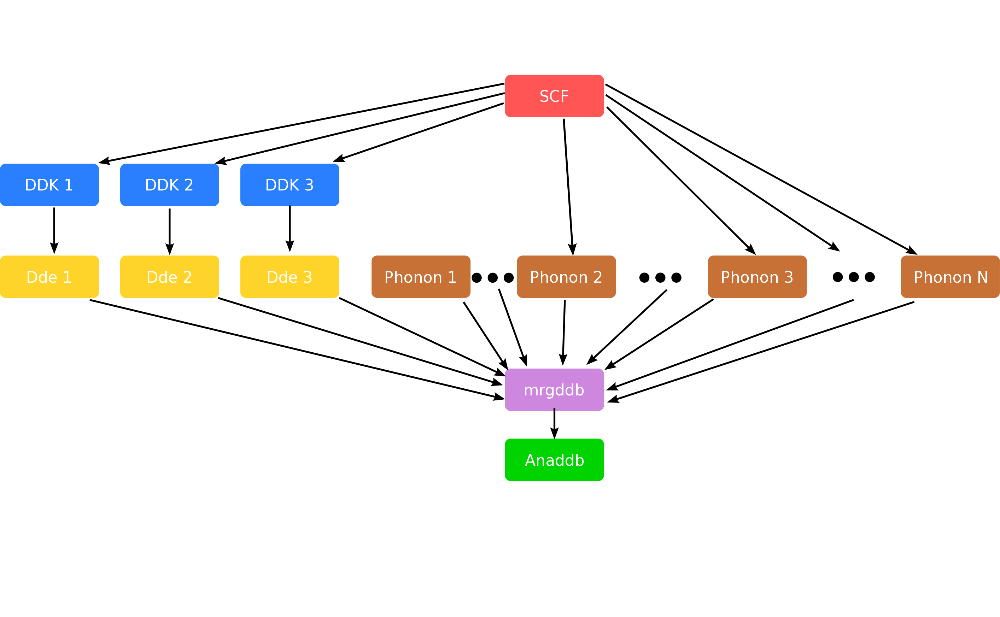
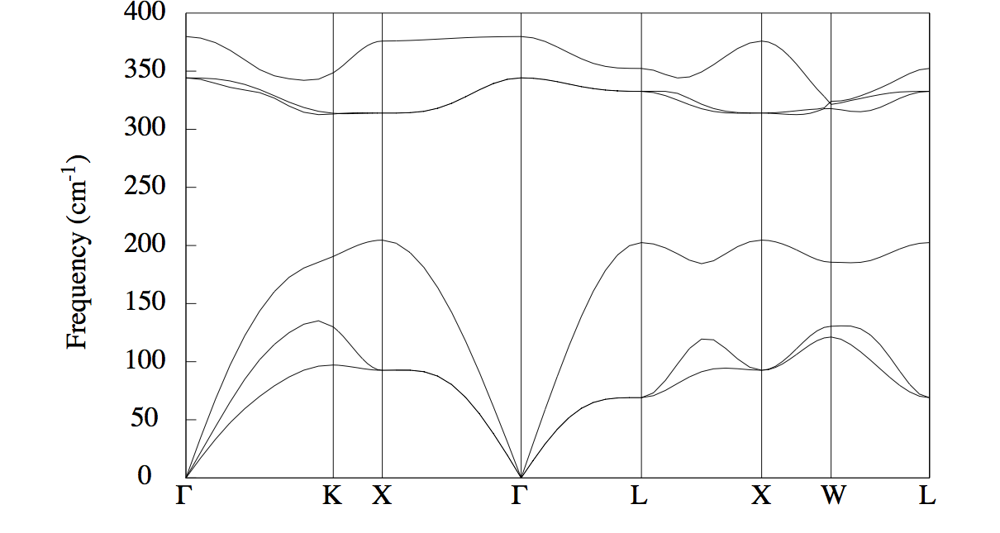
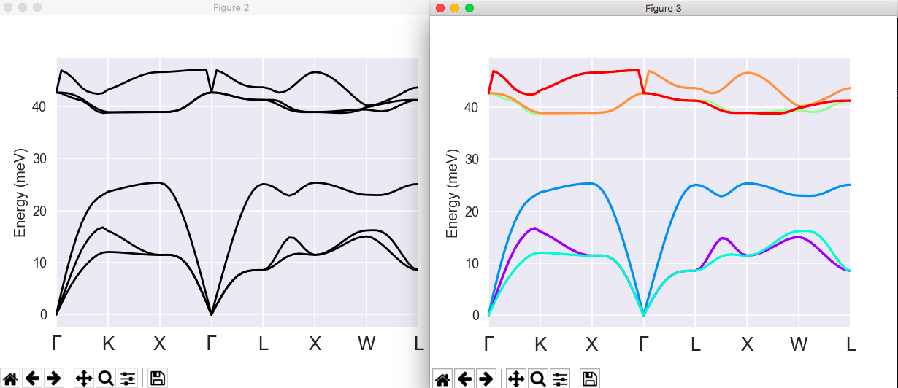
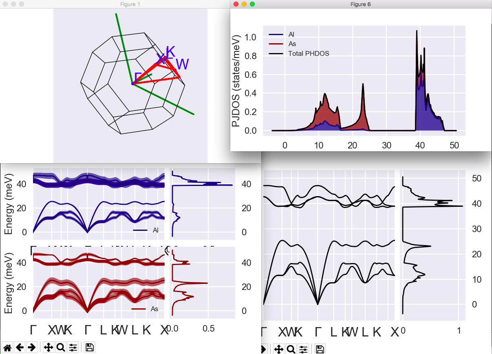

Second tutorial on DFPT:¶
Phonon band structures, thermodynamical properties.¶
In this tutorial you will learn how to post-process the raw data of the Abinit DFPT calculations to get the following physical properties of periodic solids:
- Interatomic forces constants
- Phonon band structures
- Thermodynamical properties
Visualisation tools are NOT covered in this tutorial. Powerful visualisation procedures have been developed in the Abipy context, relying on matplotlib. See the README of Abipy and the Abipy tutorials.
This tutorial should take about 1 hour.
WARNING : this tutorial is a bit old, and should be updated by removing the use of the ANADDB input variable brav in trf2_4.abi, trf2_5.abi, and trf2_7.abi, with the accompanying modifications in the text of the tutorial. Also, due to the change of default values for rfdir and rfatpol in ABINITv9.8 with respect to the prior versions of ABINIT, the example input files from this tutorial will not work with such prior versions of ABINIT. Please, use ABINITv9.8 or more recent versions of ABINIT, or adjust the values of rfdir and rfatpol. See point A.3 of the v9.8 release notes.
Note
Supposing you made your own installation of ABINIT, the input files to run the examples are in the ~abinit/tests/ directory where ~abinit is the absolute path of the abinit top-level directory. If you have NOT made your own install, ask your system administrator where to find the package, especially the executable and test files.
In case you work on your own PC or workstation, to make things easier, we suggest you define some handy environment variables by executing the following lines in the terminal:
export ABI_HOME=Replace_with_absolute_path_to_abinit_top_level_dir # Change this line
export PATH=$ABI_HOME/src/98_main/:$PATH # Do not change this line: path to executable
export ABI_TESTS=$ABI_HOME/tests/ # Do not change this line: path to tests dir
export ABI_PSPDIR=$ABI_TESTS/Psps_for_tests/ # Do not change this line: path to pseudos dir
Examples in this tutorial use these shell variables: copy and paste
the code snippets into the terminal (remember to set ABI_HOME first!) or, alternatively,
source the set_abienv.sh script located in the ~abinit directory:
source ~abinit/set_abienv.sh
The ‘export PATH’ line adds the directory containing the executables to your PATH so that you can invoke the code by simply typing abinit in the terminal instead of providing the absolute path.
To execute the tutorials, create a working directory (Work*) and
copy there the input files of the lesson.
Most of the tutorials do not rely on parallelism (except specific tutorials on parallelism). However you can run most of the tutorial examples in parallel with MPI, see the topic on parallelism.
0 Generation of necessary input wavefunctions¶
Before beginning, you might consider working in a different subdirectory as for the other tutorials, in order to help keep track of all the files. Why not create Work_rf2 in $ABI_TESTS/tutorespfn/Input?
As the DFPT equations at higher order always start from input wavefunctions obtained at lower order, we begin by generating the ground state wavefunctions and DDK wavefunctions for our system, AlAs. The ground state wavefunctions are needed for the phonon and electric field perturbations, and the electric field perturbation needs the DDK wavefunctions as well, as explained in the first tutorial on DFPT.
Copy file trf2_1.abi from $ABI_TESTS/tutorespfn/Input* to Work_rf2:
cd $ABI_TESTS/tutorespfn/Input;
mkdir Work_rf2;
cd Work_rf2;
cp ../trf2_1.abi
abinit trf2_1.abi >& log &
Let us have a look at the input file trf2_1.abi.
# Crystalline AlAs : computation of the phonon spectrum # initial steps: compute ground state wavefunctions accurately and the DDK # wavefunctions accurately ndtset 2 # first dataset: accurate ground state wavefunctions kptopt1 1 # Automatic generation of k points, taking # into account all symmetries tolvrs1 1.0d-18 # SCF stopping criterion # second dataset: DDK wavefunctions, needed later for electric field kptopt2 2 # DDK can use only time reveral symmetry getwfk2 -1 # require ground state wavefunctions from previous run rfelfd2 2 # activate DDK perturbation iscf2 -3 # this is a non-self-consistent calculation tolwfr2 1.0D-20 # tight convergence on wavefunction residuals ####################################################################### #Common input variables #Definition of the unit cell acell 3*10.61 # This is equivalent to 10.61 10.61 10.61 rprim 0.0 0.5 0.5 # In tutorials 1 and 2, these primitive vectors 0.5 0.0 0.5 # (to be scaled by acell) were 1 0 0 0 1 0 0 0 1 0.5 0.5 0.0 # that is, the default. #Definition of the atom types ntypat 2 # There are two types of atom znucl 13 33 # The keyword "znucl" refers to the atomic number of the # possible type(s) of atom. The pseudopotential(s) # mentioned in the "files" file must correspond # to the type(s) of atom. Here, type 1 is the Aluminum, # type 2 is the Arsenic. #Definition of the atoms natom 2 # There are two atoms typat 1 2 # The first is of type 1 (Al), the second is of type 2 (As). xred 0.0 0.0 0.0 0.25 0.25 0.25 #Gives the number of band, explicitly (do not take the default) nband 4 #Definition of the planewave basis set ecut 3.0 # Maximal kinetic energy cut-off, in Hartree #Definition of the k-point grid ngkpt 4 4 4 nshiftk 4 # Use one copy of grid only (default) shiftk 0.0 0.0 0.5 # This gives the usual fcc Monkhorst-Pack grid 0.0 0.5 0.0 0.5 0.0 0.0 0.5 0.5 0.5 #Definition of the SCF procedure nstep 25 # Maximal number of SCF cycles diemac 9.0 # Although this is not mandatory, it is worth to # precondition the SCF cycle. The model dielectric # function used as the standard preconditioner # is described in the "dielng" input variable section. # The dielectric constant of AlAs is smaller that the one of Si (=12). pp_dirpath "$ABI_PSPDIR" pseudos "13al.981214.fhi, PseudosTM_pwteter/33as.pspnc" ############################################################## # This section is used only for regression testing of ABINIT # ############################################################## #%%<BEGIN TEST_INFO> #%% [setup] #%% executable = abinit #%% test_chain = trf2_1.abi, trf2_2.abi, trf2_3.abi, trf2_4.abi, trf2_5.abi, trf2_6.abi, trf2_7.abi #%% [shell] #%% post_commands = ww_cp trf2_1o_DS1_WFK trf2_2o_DS99_WFK; ww_cp trf2_1o_DS2_1WF7 trf2_2o_DS98_1WF7; ww_cp trf2_1o_DS2_1WF8 trf2_2o_DS98_1WF8; ww_cp trf2_1o_DS2_1WF9 trf2_2o_DS98_1WF9; #%% [files] #%% files_to_test = #%% trf2_1.abo, tolnlines= 0, tolabs= 0.000e+00, tolrel= 0.000e+00 #%% [paral_info] #%% max_nprocs = 2 #%% [extra_info] #%% authors = X. Gonze, J. Zwanziger #%% keywords = NC, DFPT #%% description = Crystalline AlAs : computation of the phonon spectrum #%%<END TEST_INFO>
This input file consists of two datasets–the first generates the
ground state wavefunctions, with tight convergence: these are output
in the file trf2_1o_DS1_WFK. The second dataset uses these
wavefunctions to generate the DDK wavefunctions, which are output in
the files trf2_1o_DS2_1WF7, trf2_1o_DS2_1WF8, and
trf2_1o_DS2_1WF9. Depending on the details of your build, these
files might be appended with .nc, if they are produced in netcdf
format.
A note on the naming convention–the DDK files here are named 1WF7, 1WF8, and 1WF9. The “1” signifies a first-order wavefunction. Then, ABINIT numbers each perturbation, such that the phonons are numbered 1..3N, for an N atom system. Here N = 2, for AlAs. The DDK perturbations are numbered 3N+1, 3N+2, and 3N+3, for the three cartesian directions, giving in this case 7, 8, and 9.
1 Generation of a derivative database¶
With the necessary input wavefunctions generated, we are ready to compute the derivative database.
Copy the file trf2_2.abi from $ABI_TESTS/tutorespfn/Input* into your working directory:
cp ../trf2_2.abi .
Examine the input file you are about to run:
# Crystalline AlAs : computation of the phonon spectrum and electric field perturbation ndtset 8 #Q vectors for all datasets #Complete set of symmetry-inequivalent qpt chosen to be commensurate # with kpt mesh so that only one set of GS wave functions is needed. nqpt 1 # One qpt for each dataset (only 0 or 1 allowed) qptopt 1 # activate determining qpts in IBZ with symmetry ngqpt 4 4 4 # these variables mirror those used for the kpt nshiftq 1 # mesh below, but with no shift. In this way, shiftq 0 0 0 # qpts coherent with the kpts are constructed # the number of resulting q pts is pretdetermined # through use of the abitk tool iqpt: 1 iqpt+ 1 # we automatically iterate through the q pts #Set 1 : iqpt 1 is the gamma point, so Q=0 phonons and electric field pert. getddk1 98 # d/dk wave functions kptopt1 2 # Modify default to use time-reversal symmetry rfelfd1 3 # Electric-field perturbation response # (in addition to default phonon) #Sets 2-8 : Finite-wave-vector phonon calculations (defaults for all datasets) getwfk 99 # Use GS wave functions kptopt 3 # Need full k-point set for finite-Q response rfphon 1 # Do phonon response tolvrs 1.0d-8 # Converge on potential residual # turn off various file outputs, here we will be interested only the # DDB files prtwf 0 prtden 0 prtpot 0 prteig 0 ####################################################################### #Common input variables #Definition of the unit cell acell 3*10.61 # This is equivalent to 10.61 10.61 10.61 rprim 0.0 0.5 0.5 # In tutorials 1 and 2, these primitive vectors 0.5 0.0 0.5 # (to be scaled by acell) were 1 0 0 0 1 0 0 0 1 0.5 0.5 0.0 # that is, the default. #Definition of the atom types ntypat 2 # There are two types of atom znucl 13 33 # The keyword "znucl" refers to the atomic number of the # possible type(s) of atom. The pseudopotential(s) # mentioned in the "files" file must correspond # to the type(s) of atom. Here, type 1 is the Aluminum, # type 2 is the Arsenic. #Definition of the atoms natom 2 # There are two atoms typat 1 2 # The first is of type 1 (Al), the second is of type 2 (As). xred 0.0 0.0 0.0 0.25 0.25 0.25 #Gives the number of band, explicitely (do not take the default) nband 4 #Definition of the planewave basis set ecut 3.0 # Maximal kinetic energy cut-off, in Hartree #Definition of the k-point grid ngkpt 4 4 4 nshiftk 4 # Use one copy of grid only (default) shiftk 0.0 0.0 0.5 # This gives the usual fcc Monkhorst-Pack grid 0.0 0.5 0.0 0.5 0.0 0.0 0.5 0.5 0.5 #Definition of the SCF procedure nstep 25 # Maximal number of SCF cycles diemac 9.0 # Although this is not mandatory, it is worth to # precondition the SCF cycle. The model dielectric # function used as the standard preconditioner # is described in the "dielng" input variable section. # The dielectric constant of AlAs is smaller that the one of Si (=12). pp_dirpath "$ABI_PSPDIR" pseudos "13al.981214.fhi, PseudosTM_pwteter/33as.pspnc" ############################################################## # This section is used only for regression testing of ABINIT # ############################################################## #%%<BEGIN TEST_INFO> #%% [setup] #%% executable = abinit #%% test_chain = trf2_1.abi, trf2_2.abi, trf2_3.abi, trf2_4.abi, trf2_5.abi, trf2_6.abi, trf2_7.abi #%% [files] #%% files_to_test = #%% trf2_2.abo, tolnlines= 96, tolabs= 4.2e-6, tolrel= 3.0e-4 #%% [paral_info] #%% max_nprocs = 2 #%% [extra_info] #%% authors = X. Gonze, J. Zwanziger #%% keywords = NC, DFPT #%% description = Crystalline AlAs : computation of the phonon spectrum #%%<END TEST_INFO>
Notice the lines ndtset 8, getddk 98, and getwfk 99. Since we
will be looping over multiple datasets (8, in fact), in order to
compute multiple perturbations in a single file, we use multi dataset
mode. But this requires any files to be read in, to be given dataset
numbers in the same format. We avoid low numbers, because those are
the new datasets we are about to run; it’s thus convenient to relabel
the ground state and DDK wavefunctions with the dataset labels 99 and
98. Thus you can rename with
mv trf2_1o_DS1_WFK trf2_2o_DS99_WFK;
mv trf2_1o_DS2_1WF7 trf2_2o_DS98_1WF7;
mv trf2_1o_DS2_1WF8 trf2_2o_DS98_1WF8;
mv trf2_1o_DS2_1WF9 trf2_2o_DS98_1WF9
Now you can execute the file with
abinit trf2_2.abi >& log &
It takes about 1-2 minutes to be completed on a PC 2.8 GHz.
In order to do interatomic force constant (IFC) calculations, and to compute associated phonon band structure and thermodynamical properties, you should first have some theoretical background. Let us assume that you have read the literature relative to the first tutorial on DFPT. You might find additional material, related to the present section, in [Gonze1997a] -especially section IX-, [Lee1995] and [Baroni2001]. If you haven’t read parts of these references, we strongly advise you to take the time to read them now.
In short, the idea is that, in order to compute properties for which the phonon frequencies are needed in the full Brillouin zone, one can use an elaborate Fourier interpolation, so that only few dynamical matrices need to be computed directly. Others will be computed by interpolation. A schematic representation of the different steps required to compute the dynamical matrix in the IBZ and post-process the results with anaddb is given below.

The calculation is done for AlAs, the same crystalline material as for
the first tutorial on DFPT. Many input parameters are also quite
similar, both at the level of the description of the unit cell and for
the choice of cut-off energy and k point grid. The input file
trf2_2.abi consists of a loop over a small set of phonons, and all other
phonons will be determined later by interpolation. Moreover, the electric
field perturbation is also a long wavelength, hence Gamma phonon perturbation,
and can be computed at the same time. Thus our first dataset in
trf2_2.abi is the Gamma phonon and the electric field both, and the other
datasets are the additional nonzero q point phonons we wish to consider explicitly.
The values of the phonon q wavevectors are not determined arbitrarily. They must correspond to the q wavevectors needed by the ANADDB utility (see later), that is, they should form a reduced set of symmetry-inequivalent wavevectors, corresponding to a regularly spaced grid. In principle, they need not include the Gamma point, but it is recommended to have it in the set, in order for the Fourier interpolation not to introduce errors at that important point.
Tip
In order to minimize the number of preliminary non-self-consistent calculations, it is advised to take a q point mesh that is adjusted to the k point mesh used for the electronic structure: all q wavevectors should connect two k point wavevectors from this grid.
Such a set of q wavevectors can be generated conveniently, and
automatically, in the input file, using qptopt, ngqpt,
nshiftq, and shiftq, quite analogously to what can be done
with the k point grid. Look again at the file trf2_2.abi and note that
ngqpt 4 4 4 is used, mirroring ngkpt, but with nshiftq 1 and
shiftq 0 0 0 to produce an unshifted set, which will include the Gamma point.
Tip
Never forget to use nqpt 1, whenever qpt is being input, either directly or implicitly. If nqpt is absent in the input file, it defaults to zero which leads to qpt being ignored.
This approach is conveniently combined with ndtset and iqpt to
step automatically through the generated q points, as is done in our
file with ndtset 8 and iqpt: 1 iqpt+ 1. This raises the
question, though, of how one would know in advance that there will be
8 q points in the current set. For this one can use
abitk, a convenient tool built along with ABINIT and
used to examine output files in netcdf format. Run it on our
original ground state file as:
abitk ibz trf2_1o_DS1_GSR.nc --ngkpt 4 4 4 --shiftk 0 0 0
and you should obtain a list of the k points (equivalently q points) generated with a
4 4 4 unshifted mesh, for the current input structure. There are 8 of them, and the
set includes the Gamma point, as desired.
At this point, it might be worth examining in some detail one of the Derivative Databases that has been created by the trf2_2 run. We suppose that the file trf2_2o_DS1_DDB has already been created. It corresponds to the first dataset, namely the response to q = 0 and electric field. Open this file, and read the 6.5 section of the respfn help file. Examine the trf2_2o_DS1_DDB file carefully.
Seven other similar files will be generated by the trf2_2 run, containing the same header, but a different 2DTE block. It will be the job of the MRGDDB utility, next section, to gather all these files and merge them into a single DDB file.
2 Manipulation of the derivative databases (the MRGDDB utility)¶
The use of the MRGDDB utility is described in its help file, which you should read carefully now.
Use MRGDDB to create the merged DDB from the eight DDB’s corresponding to the datasets of the trf2_2 job, which contain the dynamical matrices for the 8 q points, as well as the response to the electric field (dielectric tensor and Born effective charges). Name the new DDB trf2_3.ddb.abo.
File $ABI_TESTS/tutorespfn/Input/trf2_3.abi is an example of input file for MRGDDB.
trf2_3.ddb.abo AlAs phonons on 4 4 4 mesh 8 trf2_2o_DS1_DDB trf2_2o_DS2_DDB trf2_2o_DS3_DDB trf2_2o_DS4_DDB trf2_2o_DS5_DDB trf2_2o_DS6_DDB trf2_2o_DS7_DDB trf2_2o_DS8_DDB ############################################################## # This section is used only for regression testing of ABINIT # ############################################################## #%%<BEGIN TEST_INFO> #%% [setup] #%% executable = mrgddb #%% test_chain = trf2_1.abi, trf2_2.abi, trf2_3.abi, trf2_4.abi, trf2_5.abi, trf2_6.abi, trf2_7.abi #%% [files] #%% files_to_test = #%% trf2_3.ddb.abo, tolnlines= 43, tolabs= 4.1e-9, tolrel= 3.0e-4 #%% [paral_info] #%% max_nprocs = 1 #%% [extra_info] #%% authors = X. Gonze, J. Zwanziger #%% keywords = #%% description = Input file for anaddb #%%<END TEST_INFO>
You can copy it in the Work_rf2 directory, noting that if your DDB
files were produced in netcdf format, you will need to include
properly the .nc suffixes in the file names listed in trf2_3.abi.
Then run the merge as follows:
mrgddb < trf2_3.abi
Note the chevron in the call: MRGDDB reads from standard input by
default, so you can make it read instead from a file using the <
operator.
3 Analysis of the derivative databases¶
An introduction to the use of the ANADDB utility is described in its help file. Please, read it carefully.
This ANADDB utility is able to perform many different tasks, each governed by a selected set of input variables, with also some input variables common to many of the different tasks. The list of tasks to be done in one run is governed by different flags. Here is the list of the commonly used flags:
Please, take some time to read the description of each of these flags. Note that some of these flags might be required to allow to run another task. In this tutorial, we will focus on the flags ifcflag and thmflag.
4 The computation of interatomic force constants¶
You can copy the file trf2_4.abi from $ABI_TESTS/tutorespfn/Input to the Work_rf2 directory. Examine the file trf2_4.abi. Note that ifcflag is activated. It also specifies the input ddb file, and output file naming (ddb_filepath, output_file, and outdata_prefix).
!Input file for the anaddb code. Analysis of the AlAs DDB ! ddb input ddb_filepath = "trf2_3.ddb.abo" ! output file name output_file = "trf2_4.abo" outdata_prefix = "trf2_4o" !Flags ifcflag 1 ! Interatomic force constant flag !Wavevector grid number 1 (coarse grid, from DDB) brav 2 ! Bravais Lattice : 1-S.C., 2-F.C., 3-B.C., 4-Hex.) ! Warning : This ANADDB input variable is obsolete. One should be able to use the default brav=1 in all cases. ! The tutorial should be updated to reflect correctly the current practice. ngqpt 4 4 4 ! Monkhorst-Pack indices nqshft 1 ! number of q-points in repeated basic q-cell q1shft 3*0.0 !Interatomic force constant info dipdip 1 ! Dipole-dipole interaction treatment ifcana 1 ! Analysis of the IFCs ifcout 20 ! Number of IFC's written in the output, per atom natifc 1 ! Number of atoms in the cell for which ifc's are analysed atifc 1 ! List of atoms ############################################################## # This section is used only for regression testing of ABINIT # ############################################################## #%%<BEGIN TEST_INFO> #%% [setup] #%% executable = anaddb #%% test_chain = trf2_1.abi, trf2_2.abi, trf2_3.abi, trf2_4.abi, trf2_5.abi, trf2_6.abi, trf2_7.abi #%% [files] #%% files_to_test = #%% trf2_4.abo, tolnlines= 0, tolabs= 0.000e+00, tolrel= 0.000e+00 #%% [paral_info] #%% max_nprocs = 1 #%% [extra_info] #%% authors = X. Gonze, J. Zwanziger #%% keywords = #%% description = !Input file for the anaddb code. Analysis of the AlAs DDB #%%<END TEST_INFO>
Related input variables can be split in three groups. The first group of variables define the grid of q wavevectors:
Unfortunately, the names of input variables and their meaning are not exactly the same as the names used to generate the k and q points in ABINIT. This is a shame, a remnant of history. Please read carefully the documentation that describes these input variables.
The second group of variables allows to impose the acoustic sum rule on the dynamical matrices and the charge neutrality on Born effective charges before proceeding with the analysis:
Please, read carefully the explanation for these input variables.
Finally, a third group of variables is related specifically to the analysis of the IFC:
Here also, spend some time to read the associated documentation.
Now, you should issue:
anaddb trf2_4.abi > trf2_4.abi.log
It will last only a few seconds.
The file trf2_4.abo contains the list of interatomic force constants, as well as some analysis.
.Version 9.11.6.1 of ANADDB
.(MPI version, prepared for a x86_64_linux_gnu11.4 computer)
.Copyright (C) 1998-2024 ABINIT group .
ANADDB comes with ABSOLUTELY NO WARRANTY.
It is free software, and you are welcome to redistribute it
under certain conditions (GNU General Public License,
see ~abinit/COPYING or http://www.gnu.org/copyleft/gpl.txt).
ABINIT is a project of the Universite Catholique de Louvain,
Corning Inc. and other collaborators, see ~abinit/doc/developers/contributors.txt .
Please read https://docs.abinit.org/theory/acknowledgments for suggested
acknowledgments of the ABINIT effort.
For more information, see https://www.abinit.org .
.Starting date : Thu 22 Feb 2024.
- ( at 09h30 )
================================================================================
-outvars_anaddb: echo values of input variables ----------------------
Flags :
ifcflag 1
Miscellaneous information :
asr 1
Interatomic Force Constants Inputs :
dipdip 1
dipqua 1
quadqu 1
ifcana 1
ifcout 20
natifc 1
atifc 1
Description of grid 1 :
brav 2
ngqpt 4 4 4
nqshft 1
q1shft
0.00000000E+00 0.00000000E+00 0.00000000E+00
================================================================================
read the DDB information and perform some checks
==== Info on the Cryst% object ====
Real(R)+Recip(G) space primitive vectors, cartesian coordinates (Bohr,Bohr^-1):
R(1)= 0.0000000 5.3050000 5.3050000 G(1)= -0.0942507 0.0942507 0.0942507
R(2)= 5.3050000 0.0000000 5.3050000 G(2)= 0.0942507 -0.0942507 0.0942507
R(3)= 5.3050000 5.3050000 0.0000000 G(3)= 0.0942507 0.0942507 -0.0942507
Unit cell volume ucvol= 2.9859750E+02 bohr^3
Angles (23,13,12)= 6.00000000E+01 6.00000000E+01 6.00000000E+01 degrees
Time-reversal symmetry is present
Reduced atomic positions [iatom, xred, symbol]:
1) 0.0000000 0.0000000 0.0000000 Al
2) 0.2500000 0.2500000 0.2500000 As
DDB file with 8 blocks has been read.
================================================================================
Dielectric Tensor and Effective Charges
anaddb : Zero the imaginary part of the Dynamical Matrix at Gamma,
and impose the ASR on the effective charges
The violation of the charge neutrality conditions
by the effective charges is as follows :
atom electric field
displacement direction
1 1 -0.022625 0.000000
1 2 0.000000 0.000000
1 3 0.000000 0.000000
2 1 0.000000 0.000000
2 2 -0.022625 0.000000
2 3 -0.000000 0.000000
3 1 -0.000000 0.000000
3 2 -0.000000 0.000000
3 3 -0.022625 0.000000
Effective charge tensors after
imposition of the charge neutrality (if requested by user),
and eventual restriction to some part :
atom displacement
1 1 2.116093E+00 -6.212091E-17 -6.175217E-17
1 2 -6.212091E-17 2.116093E+00 6.248964E-17
1 3 6.212091E-17 6.212091E-17 2.116093E+00
2 1 -2.116093E+00 6.212091E-17 6.175217E-17
2 2 6.212091E-17 -2.116093E+00 -6.248964E-17
2 3 -6.212091E-17 -6.212091E-17 -2.116093E+00
Now, the imaginary part of the dynamical matrix is zeroed
================================================================================
Calculation of the interatomic forces
-begin at tcpu 0.029 and twall 0.029 sec
Homogeneous q point set in the B.Z.
Grid q points : 32
1) 0.00000000E+00 0.00000000E+00 0.00000000E+00
2) 0.00000000E+00 2.50000000E-01 2.50000000E-01
3) 0.00000000E+00 5.00000000E-01 5.00000000E-01
4) 0.00000000E+00 -2.50000000E-01 -2.50000000E-01
5) 2.50000000E-01 0.00000000E+00 2.50000000E-01
6) 2.50000000E-01 2.50000000E-01 5.00000000E-01
7) 2.50000000E-01 -2.50000000E-01 -1.11022302E-16
8) 5.00000000E-01 0.00000000E+00 5.00000000E-01
9) -2.50000000E-01 0.00000000E+00 -2.50000000E-01
10) -2.50000000E-01 2.50000000E-01 -1.11022302E-16
11) -2.50000000E-01 -2.50000000E-01 -5.00000000E-01
12) 2.50000000E-01 2.50000000E-01 0.00000000E+00
13) 2.50000000E-01 5.00000000E-01 2.50000000E-01
14) 2.50000000E-01 7.50000000E-01 5.00000000E-01
15) 2.50000000E-01 -1.11022302E-16 -2.50000000E-01
16) 5.00000000E-01 2.50000000E-01 2.50000000E-01
17) 5.00000000E-01 5.00000000E-01 5.00000000E-01
18) 5.00000000E-01 -1.11022302E-16 -1.11022302E-16
19) 7.50000000E-01 2.50000000E-01 5.00000000E-01
20) -1.11022302E-16 2.50000000E-01 -2.50000000E-01
21) -1.11022302E-16 5.00000000E-01 -1.11022302E-16
22) -1.11022302E-16 -1.11022302E-16 -5.00000000E-01
23) 5.00000000E-01 5.00000000E-01 0.00000000E+00
24) 5.00000000E-01 7.50000000E-01 2.50000000E-01
25) 5.00000000E-01 2.50000000E-01 -2.50000000E-01
26) 7.50000000E-01 5.00000000E-01 2.50000000E-01
27) 2.50000000E-01 5.00000000E-01 -2.50000000E-01
28) -2.50000000E-01 -2.50000000E-01 0.00000000E+00
29) -2.50000000E-01 -1.11022302E-16 2.50000000E-01
30) -2.50000000E-01 -5.00000000E-01 -2.50000000E-01
31) -1.11022302E-16 -2.50000000E-01 2.50000000E-01
32) -5.00000000E-01 -2.50000000E-01 -2.50000000E-01
The interatomic forces have been obtained
Analysis of interatomic force constants
Are given : column(1-3), the total force constant
then column(4-6), the Ewald part
then column(7-9), the short-range part
Column 1, 4 and 7 are related to the displacement
of the generic atom along x,
column 2, 5 and 8 are related to the displacement
of the generic atom along y,
column 3, 6 and 9 are related to the displacement
of the generic atom along z.
generic atom number 1
with cartesian coordinates 0.00000000E+00 0.00000000E+00 0.00000000E+00
Third atom defining local coordinates :
ib = 2 irpt = 13
1 interaction with atom 1 cell 40
with coordinates 0.000000E+00 0.000000E+00 0.000000E+00
and distance 0.000000E+00
0.09360 -0.00000 0.00000 0.00000 0.00000 0.00000 0.09360 -0.00000 0.00000
0.00000 0.09360 -0.00000 0.00000 0.00000 0.00000 0.00000 0.09360 -0.00000
-0.00000 0.00000 0.09360 0.00000 0.00000 0.00000 -0.00000 0.00000 0.09360
Traces (and ratios) :
0.28079 0.00000 0.28079
1.00000 0.00000 1.00000
Transformation to local coordinates
First local vector : 0.000000 0.707107 -0.707107
Second local vector : -1.000000 -0.000000 0.000000
Third local vector : 0.000000 0.707107 0.707107
0.09360 -0.00000 -0.00000 0.00000 0.00000 0.00000 0.09360 -0.00000 -0.00000
0.00000 0.09360 0.00000 0.00000 0.00000 0.00000 0.00000 0.09360 0.00000
0.00000 -0.00000 0.09360 0.00000 0.00000 0.00000 0.00000 -0.00000 0.09360
Ratio with respect to the (1,1) element
1.00000 -0.00000 -0.00000 0.00000 0.00000 0.00000 1.00000 -0.00000 -0.00000
0.00000 1.00000 0.00000 0.00000 0.00000 0.00000 0.00000 1.00000 0.00000
0.00000 -0.00000 1.00000 0.00000 0.00000 0.00000 0.00000 -0.00000 1.00000
2 interaction with atom 2 cell 8
with coordinates -2.652500E+00 -2.652500E+00 2.652500E+00
and distance 4.594265E+00
-0.02304 -0.01597 0.01597 0.00000 0.00474 -0.00474 -0.02304 -0.02070 0.02070
-0.01597 -0.02304 0.01597 0.00474 0.00000 -0.00474 -0.02070 -0.02304 0.02070
0.01597 0.01597 -0.02304 -0.00474 -0.00474 0.00000 0.02070 0.02070 -0.02304
Traces (and ratios) :
-0.06912 0.00000 -0.06912
1.00000 -0.00000 1.00000
Transformation to local coordinates
First local vector : -0.577350 -0.577350 0.577350
Second local vector : 0.816497 -0.408248 0.408248
Third local vector : 0.000000 0.707107 0.707107
-0.05497 0.00000 -0.00000 0.00947 0.00000 0.00000 -0.06444 0.00000 -0.00000
0.00000 -0.00707 0.00000 0.00000 -0.00474 0.00000 0.00000 -0.00234 0.00000
-0.00000 0.00000 -0.00707 0.00000 0.00000 -0.00474 -0.00000 0.00000 -0.00234
Ratio with respect to the longitudinal ifc
1.00000 -0.00000 0.00000 -0.17231 0.00000 0.00000 1.17231 -0.00000 0.00000
-0.00000 0.12870 -0.00000 0.00000 0.08615 0.00000 -0.00000 0.04254 -0.00000
0.00000 -0.00000 0.12870 0.00000 0.00000 0.08615 0.00000 -0.00000 0.04254
3 interaction with atom 2 cell 13
with coordinates -2.652500E+00 2.652500E+00 -2.652500E+00
and distance 4.594265E+00
-0.02304 0.01597 -0.01597 0.00000 -0.00474 0.00474 -0.02304 0.02070 -0.02070
0.01597 -0.02304 0.01597 -0.00474 0.00000 -0.00474 0.02070 -0.02304 0.02070
-0.01597 0.01597 -0.02304 0.00474 -0.00474 0.00000 -0.02070 0.02070 -0.02304
Traces (and ratios) :
-0.06912 0.00000 -0.06912
1.00000 -0.00000 1.00000
Transformation to local coordinates
First local vector : -0.577350 0.577350 -0.577350
Second local vector : 0.816497 0.408248 -0.408248
Third local vector : 0.000000 -0.707107 -0.707107
-0.05497 0.00000 0.00000 0.00947 0.00000 0.00000 -0.06444 0.00000 0.00000
-0.00000 -0.00707 -0.00000 0.00000 -0.00474 0.00000 -0.00000 -0.00234 -0.00000
-0.00000 0.00000 -0.00707 0.00000 0.00000 -0.00474 -0.00000 0.00000 -0.00234
Ratio with respect to the longitudinal ifc
1.00000 -0.00000 -0.00000 -0.17231 0.00000 0.00000 1.17231 -0.00000 -0.00000
0.00000 0.12870 0.00000 0.00000 0.08615 0.00000 0.00000 0.04254 0.00000
0.00000 -0.00000 0.12870 0.00000 0.00000 0.08615 0.00000 -0.00000 0.04254
4 interaction with atom 2 cell 27
with coordinates 2.652500E+00 -2.652500E+00 -2.652500E+00
and distance 4.594265E+00
-0.02304 0.01597 0.01597 0.00000 -0.00474 -0.00474 -0.02304 0.02070 0.02070
0.01597 -0.02304 -0.01597 -0.00474 0.00000 0.00474 0.02070 -0.02304 -0.02070
0.01597 -0.01597 -0.02304 -0.00474 0.00474 0.00000 0.02070 -0.02070 -0.02304
Traces (and ratios) :
-0.06912 0.00000 -0.06912
1.00000 -0.00000 1.00000
Transformation to local coordinates
First local vector : 0.577350 -0.577350 -0.577350
Second local vector : 0.816497 0.408248 0.408248
Third local vector : 0.000000 -0.707107 0.707107
-0.05497 0.00000 0.00000 0.00947 0.00000 0.00000 -0.06444 0.00000 0.00000
0.00000 -0.00707 -0.00000 0.00000 -0.00474 0.00000 0.00000 -0.00234 -0.00000
-0.00000 -0.00000 -0.00707 0.00000 0.00000 -0.00474 -0.00000 -0.00000 -0.00234
Ratio with respect to the longitudinal ifc
1.00000 -0.00000 -0.00000 -0.17231 0.00000 0.00000 1.17231 -0.00000 -0.00000
-0.00000 0.12870 0.00000 0.00000 0.08615 0.00000 -0.00000 0.04254 0.00000
0.00000 0.00000 0.12870 0.00000 0.00000 0.08615 0.00000 0.00000 0.04254
5 interaction with atom 2 cell 40
with coordinates 2.652500E+00 2.652500E+00 2.652500E+00
and distance 4.594265E+00
-0.02304 -0.01597 -0.01597 0.00000 0.00474 0.00474 -0.02304 -0.02070 -0.02070
-0.01597 -0.02304 -0.01597 0.00474 0.00000 0.00474 -0.02070 -0.02304 -0.02070
-0.01597 -0.01597 -0.02304 0.00474 0.00474 0.00000 -0.02070 -0.02070 -0.02304
Traces (and ratios) :
-0.06912 0.00000 -0.06912
1.00000 -0.00000 1.00000
Transformation to local coordinates
First local vector : 0.577350 0.577350 0.577350
Second local vector : 0.816497 -0.408248 -0.408248
Third local vector : 0.000000 0.707107 -0.707107
-0.05497 0.00000 -0.00000 0.00947 0.00000 0.00000 -0.06444 0.00000 -0.00000
0.00000 -0.00707 0.00000 0.00000 -0.00474 0.00000 0.00000 -0.00234 0.00000
-0.00000 -0.00000 -0.00707 0.00000 0.00000 -0.00474 -0.00000 -0.00000 -0.00234
Ratio with respect to the longitudinal ifc
1.00000 -0.00000 0.00000 -0.17231 0.00000 0.00000 1.17231 -0.00000 0.00000
-0.00000 0.12870 -0.00000 0.00000 0.08615 0.00000 -0.00000 0.04254 -0.00000
0.00000 0.00000 0.12870 0.00000 0.00000 0.08615 0.00000 0.00000 0.04254
6 interaction with atom 1 cell 8
with coordinates -5.305000E+00 -5.305000E+00 0.000000E+00
and distance 7.502403E+00
-0.00259 -0.00267 0.00145 -0.00054 -0.00163 0.00000 -0.00205 -0.00104 0.00145
-0.00267 -0.00259 0.00145 -0.00163 -0.00054 0.00000 -0.00104 -0.00205 0.00145
-0.00145 -0.00145 0.00581 0.00000 0.00000 0.00109 -0.00145 -0.00145 0.00472
Traces (and ratios) :
0.00062 0.00000 0.00062
1.00000 0.00000 1.00000
Transformation to local coordinates
First local vector : -0.707107 -0.707107 0.000000
Second local vector : 0.000002 -0.000002 -1.000000
Third local vector : 0.707107 -0.707107 0.000002
-0.00526 0.00205 0.00000 -0.00218 0.00000 0.00000 -0.00309 0.00205 0.00000
-0.00205 0.00581 -0.00000 0.00000 0.00109 0.00000 -0.00205 0.00472 -0.00000
0.00000 -0.00000 0.00007 0.00000 0.00000 0.00109 0.00000 -0.00000 -0.00101
Ratio with respect to the longitudinal ifc
1.00000 -0.38905 0.00000 0.41324 0.00000 0.00000 0.58676 -0.38905 0.00000
0.38905 -1.10414 0.00000 0.00000 -0.20662 0.00000 0.38905 -0.89752 0.00000
-0.00000 0.00000 -0.01422 0.00000 0.00000 -0.20662 -0.00000 0.00000 0.19241
7 interaction with atom 1 cell 13
with coordinates -5.305000E+00 0.000000E+00 -5.305000E+00
and distance 7.502403E+00
-0.00259 0.00145 -0.00267 -0.00054 0.00000 -0.00163 -0.00205 0.00145 -0.00104
-0.00145 0.00581 -0.00145 0.00000 0.00109 0.00000 -0.00145 0.00472 -0.00145
-0.00267 0.00145 -0.00259 -0.00163 0.00000 -0.00054 -0.00104 0.00145 -0.00205
Traces (and ratios) :
0.00062 0.00000 0.00062
1.00000 0.00000 1.00000
Transformation to local coordinates
First local vector : -0.707107 0.000000 -0.707107
Second local vector : -0.000004 -1.000000 0.000004
Third local vector : -0.707107 0.000006 0.707107
-0.00526 0.00205 0.00000 -0.00218 0.00000 0.00000 -0.00309 0.00205 0.00000
-0.00205 0.00581 -0.00000 0.00000 0.00109 0.00000 -0.00205 0.00472 -0.00000
0.00000 -0.00000 0.00007 0.00000 0.00000 0.00109 0.00000 -0.00000 -0.00101
Ratio with respect to the longitudinal ifc
1.00000 -0.38905 0.00000 0.41324 0.00000 0.00000 0.58676 -0.38905 0.00000
0.38905 -1.10414 0.00001 0.00000 -0.20662 0.00000 0.38905 -0.89752 0.00001
-0.00000 0.00001 -0.01422 0.00000 0.00000 -0.20662 -0.00000 0.00001 0.19241
8 interaction with atom 1 cell 17
with coordinates -5.305000E+00 0.000000E+00 5.305000E+00
and distance 7.502403E+00
-0.00259 -0.00145 0.00267 -0.00054 0.00000 0.00163 -0.00205 -0.00145 0.00104
0.00145 0.00581 -0.00145 0.00000 0.00109 0.00000 0.00145 0.00472 -0.00145
0.00267 0.00145 -0.00259 0.00163 0.00000 -0.00054 0.00104 0.00145 -0.00205
Traces (and ratios) :
0.00062 0.00000 0.00062
1.00000 0.00000 1.00000
Transformation to local coordinates
First local vector : -0.707107 0.000000 0.707107
Second local vector : -0.000000 1.000000 -0.000000
Third local vector : -0.707107 -0.000000 -0.707107
-0.00526 0.00205 0.00000 -0.00218 0.00000 0.00000 -0.00309 0.00205 0.00000
-0.00205 0.00581 -0.00000 0.00000 0.00109 0.00000 -0.00205 0.00472 -0.00000
0.00000 -0.00000 0.00007 0.00000 0.00000 0.00109 0.00000 -0.00000 -0.00101
Ratio with respect to the longitudinal ifc
1.00000 -0.38905 0.00000 0.41324 0.00000 0.00000 0.58676 -0.38905 0.00000
0.38905 -1.10414 0.00000 0.00000 -0.20662 0.00000 0.38905 -0.89752 0.00000
-0.00000 0.00000 -0.01421 0.00000 0.00000 -0.20662 -0.00000 0.00000 0.19241
9 interaction with atom 1 cell 18
with coordinates -5.305000E+00 5.305000E+00 0.000000E+00
and distance 7.502403E+00
-0.00259 0.00267 -0.00145 -0.00054 0.00163 0.00000 -0.00205 0.00104 -0.00145
0.00267 -0.00259 0.00145 0.00163 -0.00054 0.00000 0.00104 -0.00205 0.00145
0.00145 -0.00145 0.00581 0.00000 0.00000 0.00109 0.00145 -0.00145 0.00472
Traces (and ratios) :
0.00062 0.00000 0.00062
1.00000 0.00000 1.00000
Transformation to local coordinates
First local vector : -0.707107 0.707107 0.000000
Second local vector : -0.000001 -0.000001 1.000000
Third local vector : 0.707107 0.707107 0.000001
-0.00526 0.00205 0.00000 -0.00218 0.00000 0.00000 -0.00309 0.00205 0.00000
-0.00205 0.00581 0.00000 0.00000 0.00109 0.00000 -0.00205 0.00472 0.00000
0.00000 0.00000 0.00007 0.00000 0.00000 0.00109 0.00000 0.00000 -0.00101
Ratio with respect to the longitudinal ifc
1.00000 -0.38905 0.00000 0.41324 0.00000 0.00000 0.58676 -0.38905 0.00000
0.38905 -1.10415 -0.00000 0.00000 -0.20662 0.00000 0.38905 -0.89753 -0.00000
0.00000 -0.00000 -0.01422 0.00000 0.00000 -0.20662 0.00000 -0.00000 0.19240
10 interaction with atom 1 cell 27
with coordinates 0.000000E+00 -5.305000E+00 -5.305000E+00
and distance 7.502403E+00
0.00581 -0.00145 -0.00145 0.00109 0.00000 0.00000 0.00472 -0.00145 -0.00145
0.00145 -0.00259 -0.00267 0.00000 -0.00054 -0.00163 0.00145 -0.00205 -0.00104
0.00145 -0.00267 -0.00259 0.00000 -0.00163 -0.00054 0.00145 -0.00104 -0.00205
Traces (and ratios) :
0.00062 0.00000 0.00062
1.00000 0.00000 1.00000
Transformation to local coordinates
First local vector : 0.000000 -0.707107 -0.707107
Second local vector : -1.000000 0.000003 -0.000003
Third local vector : 0.000005 0.707107 -0.707107
-0.00526 0.00205 0.00000 -0.00218 0.00000 0.00000 -0.00309 0.00205 0.00000
-0.00205 0.00581 -0.00000 0.00000 0.00109 0.00000 -0.00205 0.00472 -0.00000
0.00000 -0.00000 0.00007 0.00000 0.00000 0.00109 0.00000 -0.00000 -0.00101
Ratio with respect to the longitudinal ifc
1.00000 -0.38905 0.00000 0.41324 0.00000 0.00000 0.58676 -0.38905 0.00000
0.38905 -1.10414 0.00001 0.00000 -0.20662 0.00000 0.38905 -0.89752 0.00001
-0.00000 0.00001 -0.01422 0.00000 0.00000 -0.20662 -0.00000 0.00001 0.19241
11 interaction with atom 1 cell 31
with coordinates 0.000000E+00 -5.305000E+00 5.305000E+00
and distance 7.502403E+00
0.00581 0.00145 -0.00145 0.00109 0.00000 0.00000 0.00472 0.00145 -0.00145
-0.00145 -0.00259 0.00267 0.00000 -0.00054 0.00163 -0.00145 -0.00205 0.00104
0.00145 0.00267 -0.00259 0.00000 0.00163 -0.00054 0.00145 0.00104 -0.00205
Traces (and ratios) :
0.00062 0.00000 0.00062
1.00000 0.00000 1.00000
Transformation to local coordinates
First local vector : 0.000000 -0.707107 0.707107
Second local vector : 1.000000 -0.000001 -0.000001
Third local vector : 0.000001 0.707107 0.707107
-0.00526 0.00205 0.00000 -0.00218 0.00000 0.00000 -0.00309 0.00205 0.00000
-0.00205 0.00581 0.00000 0.00000 0.00109 0.00000 -0.00205 0.00472 0.00000
0.00000 0.00000 0.00007 0.00000 0.00000 0.00109 0.00000 0.00000 -0.00101
Ratio with respect to the longitudinal ifc
1.00000 -0.38905 0.00000 0.41324 0.00000 0.00000 0.58676 -0.38905 0.00000
0.38905 -1.10415 -0.00000 0.00000 -0.20662 0.00000 0.38905 -0.89753 -0.00000
0.00000 -0.00000 -0.01422 0.00000 0.00000 -0.20662 0.00000 -0.00000 0.19240
12 interaction with atom 1 cell 33
with coordinates 5.305000E+00 -5.305000E+00 0.000000E+00
and distance 7.502403E+00
-0.00259 0.00267 0.00145 -0.00054 0.00163 0.00000 -0.00205 0.00104 0.00145
0.00267 -0.00259 -0.00145 0.00163 -0.00054 0.00000 0.00104 -0.00205 -0.00145
-0.00145 0.00145 0.00581 0.00000 0.00000 0.00109 -0.00145 0.00145 0.00472
Traces (and ratios) :
0.00062 0.00000 0.00062
1.00000 0.00000 1.00000
Transformation to local coordinates
First local vector : 0.707107 -0.707107 0.000000
Second local vector : 0.000001 0.000001 1.000000
Third local vector : -0.707107 -0.707107 0.000001
-0.00526 0.00205 0.00000 -0.00218 0.00000 0.00000 -0.00309 0.00205 0.00000
-0.00205 0.00581 0.00000 0.00000 0.00109 0.00000 -0.00205 0.00472 0.00000
0.00000 0.00000 0.00007 0.00000 0.00000 0.00109 0.00000 0.00000 -0.00101
Ratio with respect to the longitudinal ifc
1.00000 -0.38905 0.00000 0.41324 0.00000 0.00000 0.58676 -0.38905 0.00000
0.38905 -1.10414 -0.00000 0.00000 -0.20662 0.00000 0.38905 -0.89752 -0.00000
0.00000 -0.00000 -0.01421 0.00000 0.00000 -0.20662 0.00000 -0.00000 0.19241
13 interaction with atom 1 cell 37
with coordinates 0.000000E+00 5.305000E+00 -5.305000E+00
and distance 7.502403E+00
0.00581 -0.00145 0.00145 0.00109 0.00000 0.00000 0.00472 -0.00145 0.00145
0.00145 -0.00259 0.00267 0.00000 -0.00054 0.00163 0.00145 -0.00205 0.00104
-0.00145 0.00267 -0.00259 0.00000 0.00163 -0.00054 -0.00145 0.00104 -0.00205
Traces (and ratios) :
0.00062 0.00000 0.00062
1.00000 0.00000 1.00000
Transformation to local coordinates
First local vector : 0.000000 0.707107 -0.707107
Second local vector : 1.000000 0.000001 0.000001
Third local vector : 0.000001 -0.707107 -0.707107
-0.00526 0.00205 0.00000 -0.00218 0.00000 0.00000 -0.00309 0.00205 0.00000
-0.00205 0.00581 0.00000 0.00000 0.00109 0.00000 -0.00205 0.00472 0.00000
0.00000 0.00000 0.00007 0.00000 0.00000 0.00109 0.00000 0.00000 -0.00101
Ratio with respect to the longitudinal ifc
1.00000 -0.38905 0.00000 0.41324 0.00000 0.00000 0.58676 -0.38905 0.00000
0.38905 -1.10414 -0.00000 0.00000 -0.20662 0.00000 0.38905 -0.89752 -0.00000
0.00000 -0.00000 -0.01421 0.00000 0.00000 -0.20662 0.00000 -0.00000 0.19241
14 interaction with atom 1 cell 38
with coordinates 5.305000E+00 0.000000E+00 -5.305000E+00
and distance 7.502403E+00
-0.00259 0.00145 0.00267 -0.00054 0.00000 0.00163 -0.00205 0.00145 0.00104
-0.00145 0.00581 0.00145 0.00000 0.00109 0.00000 -0.00145 0.00472 0.00145
0.00267 -0.00145 -0.00259 0.00163 0.00000 -0.00054 0.00104 -0.00145 -0.00205
Traces (and ratios) :
0.00062 0.00000 0.00062
1.00000 0.00000 1.00000
Transformation to local coordinates
First local vector : 0.707107 0.000000 -0.707107
Second local vector : -0.000002 1.000000 -0.000002
Third local vector : 0.707107 0.000002 0.707107
-0.00526 0.00205 0.00000 -0.00218 0.00000 0.00000 -0.00309 0.00205 0.00000
-0.00205 0.00581 0.00000 0.00000 0.00109 0.00000 -0.00205 0.00472 0.00000
-0.00000 0.00000 0.00007 0.00000 0.00000 0.00109 -0.00000 0.00000 -0.00101
Ratio with respect to the longitudinal ifc
1.00000 -0.38905 0.00000 0.41324 0.00000 0.00000 0.58676 -0.38905 0.00000
0.38905 -1.10415 -0.00000 0.00000 -0.20662 0.00000 0.38905 -0.89753 -0.00000
0.00000 -0.00000 -0.01422 0.00000 0.00000 -0.20662 0.00000 -0.00000 0.19240
15 interaction with atom 1 cell 41
with coordinates 0.000000E+00 5.305000E+00 5.305000E+00
and distance 7.502403E+00
0.00581 0.00145 0.00145 0.00109 0.00000 0.00000 0.00472 0.00145 0.00145
-0.00145 -0.00259 -0.00267 0.00000 -0.00054 -0.00163 -0.00145 -0.00205 -0.00104
-0.00145 -0.00267 -0.00259 0.00000 -0.00163 -0.00054 -0.00145 -0.00104 -0.00205
Traces (and ratios) :
0.00062 0.00000 0.00062
1.00000 0.00000 1.00000
Transformation to local coordinates
First local vector : 0.000000 0.707107 0.707107
Second local vector : -1.000000 0.000002 -0.000002
Third local vector : -0.000003 -0.707107 0.707107
-0.00526 0.00205 0.00000 -0.00218 0.00000 0.00000 -0.00309 0.00205 0.00000
-0.00205 0.00581 0.00000 0.00000 0.00109 0.00000 -0.00205 0.00472 0.00000
-0.00000 0.00000 0.00007 0.00000 0.00000 0.00109 -0.00000 0.00000 -0.00101
Ratio with respect to the longitudinal ifc
1.00000 -0.38905 0.00000 0.41324 0.00000 0.00000 0.58676 -0.38905 0.00000
0.38905 -1.10414 -0.00000 0.00000 -0.20662 0.00000 0.38905 -0.89752 -0.00000
0.00000 -0.00000 -0.01422 0.00000 0.00000 -0.20662 0.00000 -0.00000 0.19241
16 interaction with atom 1 cell 42
with coordinates 5.305000E+00 0.000000E+00 5.305000E+00
and distance 7.502403E+00
-0.00259 -0.00145 -0.00267 -0.00054 0.00000 -0.00163 -0.00205 -0.00145 -0.00104
0.00145 0.00581 0.00145 0.00000 0.00109 0.00000 0.00145 0.00472 0.00145
-0.00267 -0.00145 -0.00259 -0.00163 0.00000 -0.00054 -0.00104 -0.00145 -0.00205
Traces (and ratios) :
0.00062 0.00000 0.00062
1.00000 0.00000 1.00000
Transformation to local coordinates
First local vector : 0.707107 0.000000 0.707107
Second local vector : -0.000003 -1.000000 0.000003
Third local vector : 0.707107 -0.000004 -0.707107
-0.00526 0.00205 0.00000 -0.00218 0.00000 0.00000 -0.00309 0.00205 0.00000
-0.00205 0.00581 0.00000 0.00000 0.00109 0.00000 -0.00205 0.00472 0.00000
-0.00000 0.00000 0.00007 0.00000 0.00000 0.00109 -0.00000 0.00000 -0.00101
Ratio with respect to the longitudinal ifc
1.00000 -0.38905 0.00000 0.41324 0.00000 0.00000 0.58676 -0.38905 0.00000
0.38905 -1.10414 -0.00000 0.00000 -0.20662 0.00000 0.38905 -0.89752 -0.00000
0.00000 -0.00000 -0.01422 0.00000 0.00000 -0.20662 0.00000 -0.00000 0.19241
17 interaction with atom 1 cell 43
with coordinates 5.305000E+00 5.305000E+00 0.000000E+00
and distance 7.502403E+00
-0.00259 -0.00267 -0.00145 -0.00054 -0.00163 0.00000 -0.00205 -0.00104 -0.00145
-0.00267 -0.00259 -0.00145 -0.00163 -0.00054 0.00000 -0.00104 -0.00205 -0.00145
0.00145 0.00145 0.00581 0.00000 0.00000 0.00109 0.00145 0.00145 0.00472
Traces (and ratios) :
0.00062 0.00000 0.00062
1.00000 0.00000 1.00000
Transformation to local coordinates
First local vector : 0.707107 0.707107 0.000000
Second local vector : 0.000000 -0.000000 -1.000000
Third local vector : -0.707107 0.707107 -0.000000
-0.00526 0.00205 0.00000 -0.00218 0.00000 0.00000 -0.00309 0.00205 0.00000
-0.00205 0.00581 0.00000 0.00000 0.00109 0.00000 -0.00205 0.00472 0.00000
-0.00000 0.00000 0.00007 0.00000 0.00000 0.00109 -0.00000 0.00000 -0.00101
Ratio with respect to the longitudinal ifc
1.00000 -0.38905 0.00000 0.41324 0.00000 0.00000 0.58676 -0.38905 0.00000
0.38905 -1.10414 -0.00000 0.00000 -0.20662 0.00000 0.38905 -0.89752 -0.00000
0.00000 -0.00000 -0.01422 0.00000 0.00000 -0.20662 0.00000 -0.00000 0.19241
18 interaction with atom 2 cell 2
with coordinates -7.957500E+00 -2.652500E+00 -2.652500E+00
and distance 8.797347E+00
0.00056 0.00019 0.00019 0.00098 0.00055 0.00055 -0.00042 -0.00036 -0.00036
0.00065 -0.00047 0.00017 0.00055 -0.00049 0.00018 0.00010 0.00002 -0.00001
0.00065 0.00017 -0.00047 0.00055 0.00018 -0.00049 0.00010 -0.00001 0.00002
Traces (and ratios) :
-0.00037 0.00000 -0.00037
1.00000 -0.00000 1.00000
Transformation to local coordinates
First local vector : -0.904534 -0.301511 -0.301511
Second local vector : -0.426401 0.639580 0.639624
Third local vector : -0.000013 0.707126 -0.707087
0.00087 0.00028 0.00000 0.00135 0.00000 0.00000 -0.00048 0.00028 0.00000
-0.00038 -0.00060 0.00000 0.00000 -0.00067 0.00000 -0.00038 0.00007 0.00000
0.00000 0.00000 -0.00064 0.00000 0.00000 -0.00067 0.00000 0.00000 0.00003
Ratio with respect to the longitudinal ifc
1.00000 0.32438 0.00000 1.55521 0.00000 0.00000 -0.55521 0.32438 0.00000
-0.43325 -0.69177 0.00001 0.00000 -0.77760 0.00000 -0.43325 0.08583 0.00001
0.00001 0.00000 -0.74016 0.00000 0.00000 -0.77760 0.00001 0.00000 0.03745
19 interaction with atom 2 cell 3
with coordinates -2.652500E+00 -7.957500E+00 -2.652500E+00
and distance 8.797347E+00
-0.00047 0.00065 0.00017 -0.00049 0.00055 0.00018 0.00002 0.00010 -0.00001
0.00019 0.00056 0.00019 0.00055 0.00098 0.00055 -0.00036 -0.00042 -0.00036
0.00017 0.00065 -0.00047 0.00018 0.00055 -0.00049 -0.00001 0.00010 0.00002
Traces (and ratios) :
-0.00037 0.00000 -0.00037
1.00000 -0.00000 1.00000
Transformation to local coordinates
First local vector : -0.301511 -0.904534 -0.301511
Second local vector : 0.639640 -0.426401 0.639565
Third local vector : -0.707073 -0.000023 0.707141
0.00087 0.00028 0.00000 0.00135 0.00000 0.00000 -0.00048 0.00028 0.00000
-0.00038 -0.00060 0.00000 0.00000 -0.00067 0.00000 -0.00038 0.00007 0.00000
-0.00000 -0.00000 -0.00064 0.00000 0.00000 -0.00067 -0.00000 -0.00000 0.00003
Ratio with respect to the longitudinal ifc
1.00000 0.32443 0.00000 1.55519 0.00000 0.00000 -0.55519 0.32443 0.00000
-0.43319 -0.69178 0.00001 0.00000 -0.77759 0.00000 -0.43319 0.08582 0.00001
-0.00001 -0.00000 -0.74015 0.00000 0.00000 -0.77759 -0.00001 -0.00000 0.03745
20 interaction with atom 2 cell 4
with coordinates -2.652500E+00 -2.652500E+00 -7.957500E+00
and distance 8.797347E+00
-0.00047 0.00017 0.00065 -0.00049 0.00018 0.00055 0.00002 -0.00001 0.00010
0.00017 -0.00047 0.00065 0.00018 -0.00049 0.00055 -0.00001 0.00002 0.00010
0.00019 0.00019 0.00056 0.00055 0.00055 0.00098 -0.00036 -0.00036 -0.00042
Traces (and ratios) :
-0.00037 0.00000 -0.00037
1.00000 -0.00000 1.00000
Transformation to local coordinates
First local vector : -0.301511 -0.301511 -0.904534
Second local vector : 0.639565 0.639640 -0.426401
Third local vector : 0.707141 -0.707073 -0.000023
0.00087 0.00028 0.00000 0.00135 0.00000 0.00000 -0.00048 0.00028 0.00000
-0.00038 -0.00060 0.00000 0.00000 -0.00067 0.00000 -0.00038 0.00007 0.00000
-0.00000 0.00000 -0.00064 0.00000 0.00000 -0.00067 -0.00000 0.00000 0.00003
Ratio with respect to the longitudinal ifc
1.00000 0.32442 0.00000 1.55519 0.00000 0.00000 -0.55519 0.32442 0.00000
-0.43321 -0.69178 0.00003 0.00000 -0.77760 0.00000 -0.43321 0.08581 0.00003
-0.00001 0.00002 -0.74014 0.00000 0.00000 -0.77760 -0.00001 0.00002 0.03745
-
- Proc. 0 individual time (sec): cpu= 0.2 wall= 0.2
================================================================================
+Total cpu time 0.153 and wall time 0.153 sec
anaddb : the run completed succesfully.
Open this file and find the following paragraph:
Analysis of interatomic force constants
Are given : column(1-3), the total force constant
then column(4-6), the Ewald part
then column(7-9), the short-range part
Column 1, 4 and 7 are related to the displacement
of the generic atom along x,
column 2, 5 and 8 are related to the displacement
of the generic atom along y,
column 3, 6 and 9 are related to the displacement
of the generic atom along z.
The interatomic force constants are output for the nuclei specified by the input variable atifc. Here, only atom 1 is considered. The IFCs with respect to the other nuclei is given, by order of increasing distance. For each pair of nuclei involving atom 1, there is first the output of the IFCs in cartesian coordinates, as well as their decomposition into an Ewald and a short-range part, then, the analysis with respect to a local system of coordinate. The latter is chosen such that it diagonalizes the IFC tensor, in case of the self-force constant, and in the other cases, the first vector is the vector joining the two nuclei, in order to decompose the IFC into a longitudinal and a transverse component.
5 Computation of phonon band structures with efficient interpolation¶
You can copy the file trf2_5.abi from $ABI_TESTS/tutorespfn/Input to the Work_rf2 directory. Then open trf2_5.abi.
!Input file for the anaddb code. Analysis of the AlAs DDB ! ddb file ddb_filepath = "trf2_3.ddb.abo" ! output file output_file = "trf2_5.abo" outdata_prefix = "trf2_5o" !Flags ifcflag 1 ! Interatomic force constant flag ifcout 0 !Wavevector grid number 1 (coarse grid, from DDB) brav 2 ! Bravais Lattice : 1-S.C., 2-F.C., 3-B.C., 4-Hex.) ! Warning : This ANADDB input variable is obsolete. One should be able to use the default brav=1 in all cases. ! The tutorial should be updated to reflect correctly the current practice. ngqpt 4 4 4 ! Monkhorst-Pack indices nqshft 1 ! number of q-points in repeated basic q-cell q1shft 3*0.0 !Interatomic force constant info dipdip 1 ! Dipole-dipole interaction treatment !Phonon band structure output for band2eps - See note near end for ! dealing with gamma LO-TO splitting issue. eivec 4 ! the variables nqpath and qpath define a band structure path ! similarly to kptbound and related variables ndivsm 10 ! defines mesh size along qpath nqpath 8 ! we define the band structure path by 8 end points qpath ! here are the 8 end points 0.0000 0.0000 0.0000 !(gamma point) 0.3750 0.3750 0.7500 !(K point) 0.5000 0.5000 1.0000 !(X point) 1.0000 1.0000 1.0000 !(gamma point) 0.5000 0.5000 0.5000 !(L point) 0.5000 0.0000 0.5000 !(X point) 0.5000 0.2500 0.7500 !(W point) 0.5000 0.5000 0.5000 !(L point) !Wavevector list number 2 (Cartesian directions for non-analytic gamma phonons) nph2l 1 ! number of directions in list 2 qph2l 1.0 0.0 0.0 0.0 #%%<BEGIN TEST_INFO> #%% [setup] #%% executable = anaddb #%% test_chain = trf2_1.abi, trf2_2.abi, trf2_3.abi, trf2_4.abi, trf2_5.abi, trf2_6.abi, trf2_7.abi #%% [files] #%% files_to_test = trf2_5.abo, tolnlines=1, tolabs=1.1e-5, tolrel=1.8e-8; trf2_5o_PHANGMOM, tolnlines=264, tolabs=1.5e+00, tolrel=1.0e+00 #%% [paral_info] #%% max_nprocs = 4 #%% [extra_info] #%% authors = X. Gonze, J. Zwanziger #%% keywords = #%% description = Input file for the anaddb code. Analysis of the AlAs DDB #%%<END TEST_INFO>
Note that ifcflag is again activated. Indeed, in order to compute a phonon band structure using the Fourier interpolation, the IFCs are required. This is why the two first groups of variables, needed to generate the IFCs are still defined. The third group of variables is now restricted to dipdip only.
Then, come the input variables needed to define the list of q wavevectors in the band structure:
- eivec: flag to turn on the analysis of phonon eigenvectors
- nqpath: number of q-points defining the band structure path
- qpath: list of q-points defining the band structure path
- ndivsm: number of divisions in the shortest band structure path segment
- nph2l: number of q-directions for LO-TO correction
- qph2l: list of q-directions for LO-TO correction
Now, you should issue:
anaddb trf2_5.abi > trf2_5.log
It will last only a few seconds. The variables nqpath, qpath, and ndivsm have analogous counterparts in electronic band structure calculations, see the 3rd basic tutorial.
The file trf2_5.abo contains the list of eigenvalues, for all the needed q-wavevectors. You can open it, and have a look at the different sections of the file. Note that the interatomic force constants are computed (they are needed for the Fourier interpolation), but not printed.
.Version 9.11.6.1 of ANADDB
.(MPI version, prepared for a x86_64_linux_gnu11.4 computer)
.Copyright (C) 1998-2024 ABINIT group .
ANADDB comes with ABSOLUTELY NO WARRANTY.
It is free software, and you are welcome to redistribute it
under certain conditions (GNU General Public License,
see ~abinit/COPYING or http://www.gnu.org/copyleft/gpl.txt).
ABINIT is a project of the Universite Catholique de Louvain,
Corning Inc. and other collaborators, see ~abinit/doc/developers/contributors.txt .
Please read https://docs.abinit.org/theory/acknowledgments for suggested
acknowledgments of the ABINIT effort.
For more information, see https://www.abinit.org .
.Starting date : Thu 22 Feb 2024.
- ( at 10h36 )
================================================================================
-outvars_anaddb: echo values of input variables ----------------------
Flags :
ifcflag 1
Miscellaneous information :
eivec 4
asr 1
Interatomic Force Constants Inputs :
dipdip 1
dipqua 1
quadqu 1
ifcana 0
ifcout 0
Description of grid 1 :
brav 2
ngqpt 4 4 4
nqshft 1
q1shft
0.00000000E+00 0.00000000E+00 0.00000000E+00
Second list of wavevector (cart. coord.) :
nph2l 1
qph2l
1.00000000E+00 0.00000000E+00 0.00000000E+00 0.000E+00
================================================================================
read the DDB information and perform some checks
==== Info on the Cryst% object ====
Real(R)+Recip(G) space primitive vectors, cartesian coordinates (Bohr,Bohr^-1):
R(1)= 0.0000000 5.3050000 5.3050000 G(1)= -0.0942507 0.0942507 0.0942507
R(2)= 5.3050000 0.0000000 5.3050000 G(2)= 0.0942507 -0.0942507 0.0942507
R(3)= 5.3050000 5.3050000 0.0000000 G(3)= 0.0942507 0.0942507 -0.0942507
Unit cell volume ucvol= 2.9859750E+02 bohr^3
Angles (23,13,12)= 6.00000000E+01 6.00000000E+01 6.00000000E+01 degrees
Time-reversal symmetry is present
Reduced atomic positions [iatom, xred, symbol]:
1) 0.0000000 0.0000000 0.0000000 Al
2) 0.2500000 0.2500000 0.2500000 As
DDB file with 8 blocks has been read.
================================================================================
Dielectric Tensor and Effective Charges
anaddb : Zero the imaginary part of the Dynamical Matrix at Gamma,
and impose the ASR on the effective charges
The violation of the charge neutrality conditions
by the effective charges is as follows :
atom electric field
displacement direction
1 1 -0.022625 0.000000
1 2 0.000000 0.000000
1 3 0.000000 0.000000
2 1 0.000000 0.000000
2 2 -0.022625 0.000000
2 3 -0.000000 0.000000
3 1 -0.000000 0.000000
3 2 -0.000000 0.000000
3 3 -0.022625 0.000000
Effective charge tensors after
imposition of the charge neutrality (if requested by user),
and eventual restriction to some part :
atom displacement
1 1 2.116093E+00 -6.212091E-17 -6.175217E-17
1 2 -6.212091E-17 2.116093E+00 6.248964E-17
1 3 6.212091E-17 6.212091E-17 2.116093E+00
2 1 -2.116093E+00 6.212091E-17 6.175217E-17
2 2 6.212091E-17 -2.116093E+00 -6.248964E-17
2 3 -6.212091E-17 -6.212091E-17 -2.116093E+00
Now, the imaginary part of the dynamical matrix is zeroed
================================================================================
Calculation of the interatomic forces
-begin at tcpu 0.043 and twall 0.043 sec
Homogeneous q point set in the B.Z.
Grid q points : 32
1) 0.00000000E+00 0.00000000E+00 0.00000000E+00
2) 0.00000000E+00 2.50000000E-01 2.50000000E-01
3) 0.00000000E+00 5.00000000E-01 5.00000000E-01
4) 0.00000000E+00 -2.50000000E-01 -2.50000000E-01
5) 2.50000000E-01 0.00000000E+00 2.50000000E-01
6) 2.50000000E-01 2.50000000E-01 5.00000000E-01
7) 2.50000000E-01 -2.50000000E-01 -1.11022302E-16
8) 5.00000000E-01 0.00000000E+00 5.00000000E-01
9) -2.50000000E-01 0.00000000E+00 -2.50000000E-01
10) -2.50000000E-01 2.50000000E-01 -1.11022302E-16
11) -2.50000000E-01 -2.50000000E-01 -5.00000000E-01
12) 2.50000000E-01 2.50000000E-01 0.00000000E+00
13) 2.50000000E-01 5.00000000E-01 2.50000000E-01
14) 2.50000000E-01 7.50000000E-01 5.00000000E-01
15) 2.50000000E-01 -1.11022302E-16 -2.50000000E-01
16) 5.00000000E-01 2.50000000E-01 2.50000000E-01
17) 5.00000000E-01 5.00000000E-01 5.00000000E-01
18) 5.00000000E-01 -1.11022302E-16 -1.11022302E-16
19) 7.50000000E-01 2.50000000E-01 5.00000000E-01
20) -1.11022302E-16 2.50000000E-01 -2.50000000E-01
21) -1.11022302E-16 5.00000000E-01 -1.11022302E-16
22) -1.11022302E-16 -1.11022302E-16 -5.00000000E-01
23) 5.00000000E-01 5.00000000E-01 0.00000000E+00
24) 5.00000000E-01 7.50000000E-01 2.50000000E-01
25) 5.00000000E-01 2.50000000E-01 -2.50000000E-01
26) 7.50000000E-01 5.00000000E-01 2.50000000E-01
27) 2.50000000E-01 5.00000000E-01 -2.50000000E-01
28) -2.50000000E-01 -2.50000000E-01 0.00000000E+00
29) -2.50000000E-01 -1.11022302E-16 2.50000000E-01
30) -2.50000000E-01 -5.00000000E-01 -2.50000000E-01
31) -1.11022302E-16 -2.50000000E-01 2.50000000E-01
32) -5.00000000E-01 -2.50000000E-01 -2.50000000E-01
The interatomic forces have been obtained
================================================================================
Treat the first list of vectors
Phonon wavevector (reduced coordinates) : 0.00000 0.00000 0.00000
Phonon energies in Hartree :
0.000000E+00 0.000000E+00 0.000000E+00 1.568561E-03 1.568561E-03
1.568561E-03
Phonon frequencies in cm-1 :
- 0.000000E+00 0.000000E+00 0.000000E+00 3.442594E+02 3.442594E+02
- 3.442594E+02
Analysis of degeneracies and characters (maximum tolerance=1.00E-06 a.u.)
For each vibration mode, or group of modes if degenerate,
the characters are given for each symmetry operation (see the list in the log file).
Symmetry characters of vibration mode # 1
degenerate with vibration modes # 2 to 3
3.0 -1.0 -1.0 -1.0 1.0 -1.0 1.0 -1.0 -0.0 0.0 -0.0 0.0 1.0 -1.0 -1.0 1.0
-0.0 -0.0 0.0 0.0 1.0 1.0 -1.0 -1.0
Symmetry characters of vibration mode # 4
degenerate with vibration modes # 5 to 6
3.0 -1.0 -1.0 -1.0 1.0 -1.0 1.0 -1.0 0.0 -0.0 0.0 -0.0 1.0 -1.0 -1.0 1.0
0.0 0.0 -0.0 -0.0 1.0 1.0 -1.0 -1.0
Phonon wavevector (reduced coordinates) : 0.01250 0.01250 0.02500
Phonon energies in Hartree :
2.626988E-05 3.325293E-05 5.299826E-05 1.567815E-03 1.568469E-03
1.729908E-03
Phonon frequencies in cm-1 :
- 5.765572E+00 7.298174E+00 1.163177E+01 3.440956E+02 3.442391E+02
- 3.796708E+02
Speed of sound for this q and mode:
in atomic units: 0.1254696234E-02
in units km/s: 2.74489
Partial Debye temperature for this q and mode:
in atomic units: 0.7316895847E-03
in SI units K : 231.04902
Speed of sound for this q and mode:
in atomic units: 0.1588219027E-02
in units km/s: 3.47453
Partial Debye temperature for this q and mode:
in atomic units: 0.9261869830E-03
in SI units K : 292.46637
Speed of sound for this q and mode:
in atomic units: 0.2531291325E-02
in units km/s: 5.53768
Partial Debye temperature for this q and mode:
in atomic units: 0.1476149723E-02
in SI units K : 466.13066
Phonon wavevector (reduced coordinates) : 0.02500 0.02500 0.05000
Phonon energies in Hartree :
5.234521E-05 6.653583E-05 1.056846E-04 1.565630E-03 1.568181E-03
1.727918E-03
Phonon frequencies in cm-1 :
- 1.148844E+01 1.460293E+01 2.319509E+01 3.436162E+02 3.441759E+02
- 3.792342E+02
Speed of sound for this q and mode:
in atomic units: 0.1250050117E-02
in units km/s: 2.73472
Partial Debye temperature for this q and mode:
in atomic units: 0.7289801515E-03
in SI units K : 230.19345
Speed of sound for this q and mode:
in atomic units: 0.1588934782E-02
in units km/s: 3.47610
Partial Debye temperature for this q and mode:
in atomic units: 0.9266043832E-03
in SI units K : 292.59817
Speed of sound for this q and mode:
in atomic units: 0.2523842078E-02
in units km/s: 5.52139
Partial Debye temperature for this q and mode:
in atomic units: 0.1471805614E-02
in SI units K : 464.75890
Phonon wavevector (reduced coordinates) : 0.03750 0.03750 0.07500
Phonon energies in Hartree :
7.803871E-05 9.986476E-05 1.577526E-04 1.562166E-03 1.567666E-03
1.724591E-03
Phonon frequencies in cm-1 :
- 1.712752E+01 2.191778E+01 3.462268E+01 3.428558E+02 3.440628E+02
- 3.785041E+02
Speed of sound for this q and mode:
in atomic units: 0.1242422511E-02
in units km/s: 2.71804
Partial Debye temperature for this q and mode:
in atomic units: 0.7245320310E-03
in SI units K : 228.78885
Speed of sound for this q and mode:
in atomic units: 0.1589906289E-02
in units km/s: 3.47822
Partial Debye temperature for this q and mode:
in atomic units: 0.9271709284E-03
in SI units K : 292.77708
Speed of sound for this q and mode:
in atomic units: 0.2511514285E-02
in units km/s: 5.49442
Partial Debye temperature for this q and mode:
in atomic units: 0.1464616529E-02
in SI units K : 462.48877
Phonon wavevector (reduced coordinates) : 0.05000 0.05000 0.10000
Phonon energies in Hartree :
1.031773E-04 1.332293E-04 2.089069E-04 1.557670E-03 1.566875E-03
1.719917E-03
Phonon frequencies in cm-1 :
- 2.264481E+01 2.924045E+01 4.584975E+01 3.418689E+02 3.438892E+02
- 3.774782E+02
Speed of sound for this q and mode:
in atomic units: 0.1231983332E-02
in units km/s: 2.69520
Partial Debye temperature for this q and mode:
in atomic units: 0.7184443119E-03
in SI units K : 226.86650
Speed of sound for this q and mode:
in atomic units: 0.1590816997E-02
in units km/s: 3.48022
Partial Debye temperature for this q and mode:
in atomic units: 0.9277020174E-03
in SI units K : 292.94478
Speed of sound for this q and mode:
in atomic units: 0.2494440819E-02
in units km/s: 5.45707
Partial Debye temperature for this q and mode:
in atomic units: 0.1454659954E-02
in SI units K : 459.34474
Phonon wavevector (reduced coordinates) : 0.06250 0.06250 0.12500
Phonon energies in Hartree :
1.276086E-04 1.665824E-04 2.588691E-04 1.552453E-03 1.565744E-03
1.713891E-03
Phonon frequencies in cm-1 :
- 2.800684E+01 3.656060E+01 5.681521E+01 3.407240E+02 3.436410E+02
- 3.761555E+02
Speed of sound for this q and mode:
in atomic units: 0.1218962552E-02
in units km/s: 2.66671
Partial Debye temperature for this q and mode:
in atomic units: 0.7108511042E-03
in SI units K : 224.46876
Speed of sound for this q and mode:
in atomic units: 0.1591254052E-02
in units km/s: 3.48117
Partial Debye temperature for this q and mode:
in atomic units: 0.9279568909E-03
in SI units K : 293.02526
Speed of sound for this q and mode:
in atomic units: 0.2472810223E-02
in units km/s: 5.40975
Partial Debye temperature for this q and mode:
in atomic units: 0.1442045840E-02
in SI units K : 455.36152
Phonon wavevector (reduced coordinates) : 0.07500 0.07500 0.15000
Phonon energies in Hartree :
1.512057E-04 1.998338E-04 3.073840E-04 1.546862E-03 1.564200E-03
1.706522E-03
Phonon frequencies in cm-1 :
- 3.318582E+01 4.385846E+01 6.746300E+01 3.394971E+02 3.433023E+02
- 3.745383E+02
Speed of sound for this q and mode:
in atomic units: 0.1203642283E-02
in units km/s: 2.63320
Partial Debye temperature for this q and mode:
in atomic units: 0.7019169249E-03
in SI units K : 221.64757
Speed of sound for this q and mode:
in atomic units: 0.1590736719E-02
in units km/s: 3.48004
Partial Debye temperature for this q and mode:
in atomic units: 0.9276552026E-03
in SI units K : 292.93000
Speed of sound for this q and mode:
in atomic units: 0.2446868238E-02
in units km/s: 5.35299
Partial Debye temperature for this q and mode:
in atomic units: 0.1426917493E-02
in SI units K : 450.58437
Phonon wavevector (reduced coordinates) : 0.08750 0.08750 0.17500
Phonon energies in Hartree :
1.738718E-04 2.328484E-04 3.542252E-04 1.541247E-03 1.562168E-03
1.697844E-03
Phonon frequencies in cm-1 :
- 3.816045E+01 5.110431E+01 7.774345E+01 3.382645E+02 3.428562E+02
- 3.726337E+02
Speed of sound for this q and mode:
in atomic units: 0.1186346664E-02
in units km/s: 2.59536
Partial Debye temperature for this q and mode:
in atomic units: 0.6918307988E-03
in SI units K : 218.46263
Speed of sound for this q and mode:
in atomic units: 0.1588750265E-02
in units km/s: 3.47570
Partial Debye temperature for this q and mode:
in atomic units: 0.9264967802E-03
in SI units K : 292.56420
Speed of sound for this q and mode:
in atomic units: 0.2416918128E-02
in units km/s: 5.28747
Partial Debye temperature for this q and mode:
in atomic units: 0.1409451764E-02
in SI units K : 445.06914
Phonon wavevector (reduced coordinates) : 0.10000 0.10000 0.20000
Phonon energies in Hartree :
1.955421E-04 2.654480E-04 3.992009E-04 1.535916E-03 1.559572E-03
1.687923E-03
Phonon frequencies in cm-1 :
- 4.291652E+01 5.825909E+01 8.761448E+01 3.370946E+02 3.422865E+02
- 3.704562E+02
Speed of sound for this q and mode:
in atomic units: 0.1167429667E-02
in units km/s: 2.55398
Partial Debye temperature for this q and mode:
in atomic units: 0.6807991488E-03
in SI units K : 214.97911
Speed of sound for this q and mode:
in atomic units: 0.1584783398E-02
in units km/s: 3.46702
Partial Debye temperature for this q and mode:
in atomic units: 0.9241834591E-03
in SI units K : 291.83371
Speed of sound for this q and mode:
in atomic units: 0.2383318387E-02
in units km/s: 5.21396
Partial Debye temperature for this q and mode:
in atomic units: 0.1389857714E-02
in SI units K : 438.88183
Phonon wavevector (reduced coordinates) : 0.11250 0.11250 0.22500
Phonon energies in Hartree :
2.161844E-04 2.974199E-04 4.421587E-04 1.531111E-03 1.556347E-03
1.676865E-03
Phonon frequencies in cm-1 :
- 4.744698E+01 6.527612E+01 9.704261E+01 3.360399E+02 3.415786E+02
- 3.680293E+02
Phonon wavevector (reduced coordinates) : 0.12500 0.12500 0.25000
Phonon energies in Hartree :
2.357975E-04 3.285286E-04 4.829876E-04 1.526963E-03 1.552441E-03
1.664831E-03
Phonon frequencies in cm-1 :
- 5.175158E+01 7.210370E+01 1.060035E+02 3.351297E+02 3.407214E+02
- 3.653881E+02
Phonon wavevector (reduced coordinates) : 0.13750 0.13750 0.27500
Phonon energies in Hartree :
2.544078E-04 3.585319E-04 5.216182E-04 1.523474E-03 1.547822E-03
1.652046E-03
Phonon frequencies in cm-1 :
- 5.583607E+01 7.868866E+01 1.144820E+02 3.343638E+02 3.397076E+02
- 3.625822E+02
Phonon wavevector (reduced coordinates) : 0.15000 0.15000 0.30000
Phonon energies in Hartree :
2.720631E-04 3.871988E-04 5.580176E-04 1.520484E-03 1.542481E-03
1.638819E-03
Phonon frequencies in cm-1 :
- 5.971095E+01 8.498032E+01 1.224707E+02 3.337077E+02 3.385355E+02
- 3.596793E+02
Phonon wavevector (reduced coordinates) : 0.16250 0.16250 0.32500
Phonon energies in Hartree :
2.888254E-04 4.143280E-04 5.921825E-04 1.517668E-03 1.536435E-03
1.625556E-03
Phonon frequencies in cm-1 :
- 6.338984E+01 9.093448E+01 1.299690E+02 3.330897E+02 3.372086E+02
- 3.567683E+02
Phonon wavevector (reduced coordinates) : 0.17500 0.17500 0.35000
Phonon energies in Hartree :
3.047620E-04 4.397642E-04 6.241275E-04 1.514535E-03 1.529729E-03
1.612769E-03
Phonon frequencies in cm-1 :
- 6.688753E+01 9.651709E+01 1.369802E+02 3.324020E+02 3.357368E+02
- 3.539619E+02
Phonon wavevector (reduced coordinates) : 0.18750 0.18750 0.37500
Phonon energies in Hartree :
3.199369E-04 4.634111E-04 6.538739E-04 1.510483E-03 1.522435E-03
1.601050E-03
Phonon frequencies in cm-1 :
- 7.021804E+01 1.017070E+02 1.435087E+02 3.315126E+02 3.341359E+02
- 3.513899E+02
Phonon wavevector (reduced coordinates) : 0.20000 0.20000 0.40000
Phonon energies in Hartree :
3.344014E-04 4.852372E-04 6.814389E-04 1.504940E-03 1.514651E-03
1.590955E-03
Phonon frequencies in cm-1 :
- 7.339261E+01 1.064973E+02 1.495586E+02 3.302961E+02 3.324276E+02
- 3.491742E+02
Phonon wavevector (reduced coordinates) : 0.21250 0.21250 0.42500
Phonon energies in Hartree :
3.481866E-04 5.052755E-04 7.068276E-04 1.497601E-03 1.506499E-03
1.582798E-03
Phonon frequencies in cm-1 :
- 7.641814E+01 1.108951E+02 1.551307E+02 3.286854E+02 3.306383E+02
- 3.473840E+02
Phonon wavevector (reduced coordinates) : 0.22500 0.22500 0.45000
Phonon energies in Hartree :
3.612988E-04 5.236142E-04 7.300300E-04 1.488612E-03 1.498119E-03
1.576499E-03
Phonon frequencies in cm-1 :
- 7.929591E+01 1.149200E+02 1.602231E+02 3.267126E+02 3.287991E+02
- 3.460015E+02
Phonon wavevector (reduced coordinates) : 0.23750 0.23750 0.47500
Phonon energies in Hartree :
3.737156E-04 5.403789E-04 7.510231E-04 1.478514E-03 1.489664E-03
1.571656E-03
Phonon frequencies in cm-1 :
- 8.202110E+01 1.185995E+02 1.648305E+02 3.244962E+02 3.269435E+02
- 3.449387E+02
Phonon wavevector (reduced coordinates) : 0.25000 0.25000 0.50000
Phonon energies in Hartree :
3.853878E-04 5.557042E-04 7.697782E-04 1.468005E-03 1.481296E-03
1.567803E-03
Phonon frequencies in cm-1 :
- 8.458284E+01 1.219630E+02 1.689468E+02 3.221898E+02 3.251070E+02
- 3.440930E+02
Phonon wavevector (reduced coordinates) : 0.26250 0.26250 0.52500
Phonon energies in Hartree :
3.962416E-04 5.696962E-04 7.862768E-04 1.457750E-03 1.473176E-03
1.564606E-03
Phonon frequencies in cm-1 :
- 8.696499E+01 1.250339E+02 1.725678E+02 3.199390E+02 3.233247E+02
- 3.433912E+02
Phonon wavevector (reduced coordinates) : 0.27500 0.27500 0.55000
Phonon energies in Hartree :
4.061860E-04 5.823852E-04 8.005333E-04 1.448297E-03 1.465455E-03
1.561936E-03
Phonon frequencies in cm-1 :
- 8.914753E+01 1.278188E+02 1.756967E+02 3.178645E+02 3.216303E+02
- 3.428052E+02
Phonon wavevector (reduced coordinates) : 0.28750 0.28750 0.57500
Phonon energies in Hartree :
4.151203E-04 5.936730E-04 8.126289E-04 1.440077E-03 1.458274E-03
1.559860E-03
Phonon frequencies in cm-1 :
- 9.110837E+01 1.302962E+02 1.783514E+02 3.160603E+02 3.200542E+02
- 3.423497E+02
Phonon wavevector (reduced coordinates) : 0.30000 0.30000 0.60000
Phonon energies in Hartree :
4.229440E-04 6.032840E-04 8.227532E-04 1.433403E-03 1.451749E-03
1.558597E-03
Phonon frequencies in cm-1 :
- 9.282548E+01 1.324055E+02 1.805734E+02 3.145956E+02 3.186221E+02
- 3.420725E+02
Phonon wavevector (reduced coordinates) : 0.31250 0.31250 0.62500
Phonon energies in Hartree :
4.295669E-04 6.107364E-04 8.312437E-04 1.428475E-03 1.445972E-03
1.558472E-03
Phonon frequencies in cm-1 :
- 9.427904E+01 1.340411E+02 1.824369E+02 3.135139E+02 3.173542E+02
- 3.420451E+02
Phonon wavevector (reduced coordinates) : 0.32500 0.32500 0.65000
Phonon energies in Hartree :
4.349188E-04 6.153599E-04 8.386003E-04 1.425348E-03 1.441003E-03
1.559876E-03
Phonon frequencies in cm-1 :
- 9.545364E+01 1.350559E+02 1.840515E+02 3.128277E+02 3.162636E+02
- 3.423532E+02
Phonon wavevector (reduced coordinates) : 0.33750 0.33750 0.67500
Phonon energies in Hartree :
4.389581E-04 6.163903E-04 8.454404E-04 1.423913E-03 1.436870E-03
1.563221E-03
Phonon frequencies in cm-1 :
- 9.634017E+01 1.352820E+02 1.855527E+02 3.125128E+02 3.153566E+02
- 3.430873E+02
Phonon wavevector (reduced coordinates) : 0.35000 0.35000 0.70000
Phonon energies in Hartree :
4.416793E-04 6.131453E-04 8.523797E-04 1.423886E-03 1.433570E-03
1.568890E-03
Phonon frequencies in cm-1 :
- 9.693740E+01 1.345698E+02 1.870757E+02 3.125068E+02 3.146323E+02
- 3.443317E+02
Phonon wavevector (reduced coordinates) : 0.36250 0.36250 0.72500
Phonon energies in Hartree :
4.431182E-04 6.052351E-04 8.598710E-04 1.424840E-03 1.431067E-03
1.577165E-03
Phonon frequencies in cm-1 :
- 9.725320E+01 1.328337E+02 1.887199E+02 3.127163E+02 3.140830E+02
- 3.461478E+02
Phonon wavevector (reduced coordinates) : 0.37500 0.37500 0.75000
Phonon energies in Hartree :
4.433554E-04 5.927067E-04 8.680911E-04 1.426298E-03 1.429300E-03
1.588132E-03
Phonon frequencies in cm-1 :
- 9.730527E+01 1.300841E+02 1.905240E+02 3.130363E+02 3.136951E+02
- 3.485547E+02
Phonon wavevector (reduced coordinates) : 0.38750 0.38750 0.77500
Phonon energies in Hartree :
4.425177E-04 5.760579E-04 8.769379E-04 1.427829E-03 1.428183E-03
1.601605E-03
Phonon frequencies in cm-1 :
- 9.712140E+01 1.264301E+02 1.924656E+02 3.133723E+02 3.134500E+02
- 3.515118E+02
Phonon wavevector (reduced coordinates) : 0.40000 0.40000 0.80000
Phonon energies in Hartree :
4.407757E-04 5.561413E-04 8.861186E-04 1.427615E-03 1.429130E-03
1.617101E-03
Phonon frequencies in cm-1 :
- 9.673908E+01 1.220589E+02 1.944806E+02 3.133253E+02 3.136577E+02
- 3.549126E+02
Phonon wavevector (reduced coordinates) : 0.41250 0.41250 0.82500
Phonon energies in Hartree :
4.383403E-04 5.340398E-04 8.952588E-04 1.427483E-03 1.430045E-03
1.633878E-03
Phonon frequencies in cm-1 :
- 9.620457E+01 1.172082E+02 1.964866E+02 3.132964E+02 3.138586E+02
- 3.585947E+02
Phonon wavevector (reduced coordinates) : 0.42500 0.42500 0.85000
Phonon energies in Hartree :
4.354543E-04 5.109678E-04 9.039810E-04 1.427671E-03 1.430548E-03
1.651028E-03
Phonon frequencies in cm-1 :
- 9.557118E+01 1.121445E+02 1.984009E+02 3.133376E+02 3.139689E+02
- 3.623587E+02
Phonon wavevector (reduced coordinates) : 0.43750 0.43750 0.87500
Phonon energies in Hartree :
4.323818E-04 4.882103E-04 9.119447E-04 1.428063E-03 1.430694E-03
1.667580E-03
Phonon frequencies in cm-1 :
- 9.489683E+01 1.071498E+02 2.001487E+02 3.134236E+02 3.140011E+02
- 3.659916E+02
Phonon wavevector (reduced coordinates) : 0.45000 0.45000 0.90000
Phonon energies in Hartree :
4.293929E-04 4.670829E-04 9.188601E-04 1.428551E-03 1.430588E-03
1.682593E-03
Phonon frequencies in cm-1 :
- 9.424085E+01 1.025128E+02 2.016665E+02 3.135306E+02 3.139777E+02
- 3.692864E+02
Phonon wavevector (reduced coordinates) : 0.46250 0.46250 0.92500
Phonon energies in Hartree :
4.267469E-04 4.488866E-04 9.244894E-04 1.429038E-03 1.430346E-03
1.695220E-03
Phonon frequencies in cm-1 :
- 9.366013E+01 9.851923E+01 2.029020E+02 3.136375E+02 3.139246E+02
- 3.720577E+02
Phonon wavevector (reduced coordinates) : 0.47500 0.47500 0.95000
Phonon energies in Hartree :
4.246731E-04 4.348347E-04 9.286461E-04 1.429446E-03 1.430080E-03
1.704762E-03
Phonon frequencies in cm-1 :
- 9.320496E+01 9.543518E+01 2.038143E+02 3.137270E+02 3.138663E+02
- 3.741520E+02
Phonon wavevector (reduced coordinates) : 0.48750 0.48750 0.97500
Phonon energies in Hartree :
4.233515E-04 4.259429E-04 9.311950E-04 1.429715E-03 1.429881E-03
1.710701E-03
Phonon frequencies in cm-1 :
- 9.291492E+01 9.348367E+01 2.043737E+02 3.137861E+02 3.138227E+02
- 3.754554E+02
Phonon wavevector (reduced coordinates) : 0.50000 0.50000 1.00000
Phonon energies in Hartree :
4.228977E-04 4.228977E-04 9.320539E-04 1.429808E-03 1.429808E-03
1.712716E-03
Phonon frequencies in cm-1 :
- 9.281533E+01 9.281533E+01 2.045622E+02 3.138067E+02 3.138067E+02
- 3.758978E+02
Phonon wavevector (reduced coordinates) : 0.51786 0.51786 1.00000
Phonon energies in Hartree :
4.229932E-04 4.229932E-04 9.304931E-04 1.429820E-03 1.429820E-03
1.712793E-03
Phonon frequencies in cm-1 :
- 9.283627E+01 9.283627E+01 2.042196E+02 3.138092E+02 3.138092E+02
- 3.759147E+02
Phonon wavevector (reduced coordinates) : 0.53571 0.53571 1.00000
Phonon energies in Hartree :
4.232442E-04 4.232442E-04 9.258182E-04 1.429872E-03 1.429872E-03
1.713023E-03
Phonon frequencies in cm-1 :
- 9.289137E+01 9.289137E+01 2.031936E+02 3.138207E+02 3.138207E+02
- 3.759650E+02
Phonon wavevector (reduced coordinates) : 0.55357 0.55357 1.00000
Phonon energies in Hartree :
4.235480E-04 4.235480E-04 9.180513E-04 1.430019E-03 1.430019E-03
1.713399E-03
Phonon frequencies in cm-1 :
- 9.295803E+01 9.295803E+01 2.014890E+02 3.138529E+02 3.138529E+02
- 3.760477E+02
Phonon wavevector (reduced coordinates) : 0.57143 0.57143 1.00000
Phonon energies in Hartree :
4.237401E-04 4.237401E-04 9.072288E-04 1.430345E-03 1.430345E-03
1.713915E-03
Phonon frequencies in cm-1 :
- 9.300020E+01 9.300020E+01 1.991137E+02 3.139244E+02 3.139244E+02
- 3.761609E+02
Phonon wavevector (reduced coordinates) : 0.58929 0.58929 1.00000
Phonon energies in Hartree :
4.236058E-04 4.236058E-04 8.934016E-04 1.430962E-03 1.430962E-03
1.714559E-03
Phonon frequencies in cm-1 :
- 9.297072E+01 9.297072E+01 1.960790E+02 3.140598E+02 3.140598E+02
- 3.763021E+02
Phonon wavevector (reduced coordinates) : 0.60714 0.60714 1.00000
Phonon energies in Hartree :
4.228932E-04 4.228932E-04 8.766339E-04 1.431999E-03 1.431999E-03
1.715316E-03
Phonon frequencies in cm-1 :
- 9.281434E+01 9.281434E+01 1.923989E+02 3.142874E+02 3.142874E+02
- 3.764684E+02
Phonon wavevector (reduced coordinates) : 0.62500 0.62500 1.00000
Phonon energies in Hartree :
4.213292E-04 4.213292E-04 8.570031E-04 1.433594E-03 1.433594E-03
1.716171E-03
Phonon frequencies in cm-1 :
- 9.247108E+01 9.247108E+01 1.880904E+02 3.146376E+02 3.146376E+02
- 3.766561E+02
Phonon wavevector (reduced coordinates) : 0.64286 0.64286 1.00000
Phonon energies in Hartree :
4.186354E-04 4.186354E-04 8.345986E-04 1.435883E-03 1.435883E-03
1.717107E-03
Phonon frequencies in cm-1 :
- 9.187984E+01 9.187984E+01 1.831732E+02 3.151400E+02 3.151400E+02
- 3.768613E+02
Phonon wavevector (reduced coordinates) : 0.66071 0.66071 1.00000
Phonon energies in Hartree :
4.145442E-04 4.145442E-04 8.095210E-04 1.438989E-03 1.438989E-03
1.718103E-03
Phonon frequencies in cm-1 :
- 9.098194E+01 9.098194E+01 1.776693E+02 3.158215E+02 3.158215E+02
- 3.770800E+02
Phonon wavevector (reduced coordinates) : 0.67857 0.67857 1.00000
Phonon energies in Hartree :
4.088138E-04 4.088138E-04 7.818811E-04 1.443006E-03 1.443006E-03
1.719141E-03
Phonon frequencies in cm-1 :
- 8.972426E+01 8.972426E+01 1.716031E+02 3.167033E+02 3.167033E+02
- 3.773078E+02
Phonon wavevector (reduced coordinates) : 0.69643 0.69643 1.00000
Phonon energies in Hartree :
4.012400E-04 4.012400E-04 7.517983E-04 1.447999E-03 1.447999E-03
1.720201E-03
Phonon frequencies in cm-1 :
- 8.806201E+01 8.806201E+01 1.650007E+02 3.177990E+02 3.177990E+02
- 3.775405E+02
Phonon wavevector (reduced coordinates) : 0.71429 0.71429 1.00000
Phonon energies in Hartree :
3.916653E-04 3.916653E-04 7.193995E-04 1.453984E-03 1.453984E-03
1.721266E-03
Phonon frequencies in cm-1 :
- 8.596060E+01 8.596060E+01 1.578899E+02 3.191127E+02 3.191127E+02
- 3.777741E+02
Phonon wavevector (reduced coordinates) : 0.73214 0.73214 1.00000
Phonon energies in Hartree :
3.799839E-04 3.799839E-04 6.848178E-04 1.460936E-03 1.460936E-03
1.722316E-03
Phonon frequencies in cm-1 :
- 8.339683E+01 8.339683E+01 1.503001E+02 3.206385E+02 3.206385E+02
- 3.780047E+02
Phonon wavevector (reduced coordinates) : 0.75000 0.75000 1.00000
Phonon energies in Hartree :
3.661433E-04 3.661433E-04 6.481909E-04 1.468779E-03 1.468779E-03
1.723338E-03
Phonon frequencies in cm-1 :
- 8.035917E+01 8.035917E+01 1.422615E+02 3.223597E+02 3.223597E+02
- 3.782289E+02
Phonon wavevector (reduced coordinates) : 0.76786 0.76786 1.00000
Phonon energies in Hartree :
3.501421E-04 3.501421E-04 6.096601E-04 1.477392E-03 1.477392E-03
1.724316E-03
Phonon frequencies in cm-1 :
- 7.684730E+01 7.684730E+01 1.338049E+02 3.242500E+02 3.242500E+02
- 3.784436E+02
Phonon wavevector (reduced coordinates) : 0.78571 0.78571 1.00000
Phonon energies in Hartree :
3.320249E-04 3.320249E-04 5.693688E-04 1.486615E-03 1.486615E-03
1.725240E-03
Phonon frequencies in cm-1 :
- 7.287103E+01 7.287103E+01 1.249620E+02 3.262743E+02 3.262743E+02
- 3.786465E+02
Phonon wavevector (reduced coordinates) : 0.80357 0.80357 1.00000
Phonon energies in Hartree :
3.118760E-04 3.118760E-04 5.274613E-04 1.496257E-03 1.496257E-03
1.726101E-03
Phonon frequencies in cm-1 :
- 6.844887E+01 6.844887E+01 1.157644E+02 3.283904E+02 3.283904E+02
- 3.788353E+02
Phonon wavevector (reduced coordinates) : 0.82143 0.82143 1.00000
Phonon energies in Hartree :
2.898118E-04 2.898118E-04 4.840823E-04 1.506101E-03 1.506101E-03
1.726891E-03
Phonon frequencies in cm-1 :
- 6.360634E+01 6.360634E+01 1.062438E+02 3.305509E+02 3.305509E+02
- 3.790087E+02
Phonon wavevector (reduced coordinates) : 0.83929 0.83929 1.00000
Phonon energies in Hartree :
2.659731E-04 2.659731E-04 4.393754E-04 1.515919E-03 1.515919E-03
1.727606E-03
Phonon frequencies in cm-1 :
- 5.837436E+01 5.837436E+01 9.643175E+01 3.327057E+02 3.327057E+02
- 3.791656E+02
Speed of sound for this q and mode:
in atomic units: 0.1397297328E-02
in units km/s: 3.05686
Partial Debye temperature for this q and mode:
in atomic units: 0.8148489438E-03
in SI units K : 257.30864
Speed of sound for this q and mode:
in atomic units: 0.1397297328E-02
in units km/s: 3.05686
Partial Debye temperature for this q and mode:
in atomic units: 0.8148489438E-03
in SI units K : 257.30864
Speed of sound for this q and mode:
in atomic units: 0.2308270698E-02
in units km/s: 5.04978
Partial Debye temperature for this q and mode:
in atomic units: 0.1346092849E-02
in SI units K : 425.06200
Phonon wavevector (reduced coordinates) : 0.85714 0.85714 1.00000
Phonon energies in Hartree :
2.405185E-04 2.405185E-04 3.934827E-04 1.525476E-03 1.525476E-03
1.728242E-03
Phonon frequencies in cm-1 :
- 5.278772E+01 5.278772E+01 8.635948E+01 3.348033E+02 3.348033E+02
- 3.793054E+02
Speed of sound for this q and mode:
in atomic units: 0.1421517136E-02
in units km/s: 3.10984
Partial Debye temperature for this q and mode:
in atomic units: 0.8289729849E-03
in SI units K : 261.76865
Speed of sound for this q and mode:
in atomic units: 0.1421517136E-02
in units km/s: 3.10984
Partial Debye temperature for this q and mode:
in atomic units: 0.8289729849E-03
in SI units K : 261.76865
Speed of sound for this q and mode:
in atomic units: 0.2325569004E-02
in units km/s: 5.08763
Partial Debye temperature for this q and mode:
in atomic units: 0.1356180542E-02
in SI units K : 428.24744
Phonon wavevector (reduced coordinates) : 0.87500 0.87500 1.00000
Phonon energies in Hartree :
2.136183E-04 2.136183E-04 3.465446E-04 1.534542E-03 1.534542E-03
1.728800E-03
Phonon frequencies in cm-1 :
- 4.688381E+01 4.688381E+01 7.605776E+01 3.367930E+02 3.367930E+02
- 3.794277E+02
Speed of sound for this q and mode:
in atomic units: 0.1442892742E-02
in units km/s: 3.15660
Partial Debye temperature for this q and mode:
in atomic units: 0.8414383992E-03
in SI units K : 265.70492
Speed of sound for this q and mode:
in atomic units: 0.1442892742E-02
in units km/s: 3.15660
Partial Debye temperature for this q and mode:
in atomic units: 0.8414383992E-03
in SI units K : 265.70492
Speed of sound for this q and mode:
in atomic units: 0.2340748120E-02
in units km/s: 5.12083
Partial Debye temperature for this q and mode:
in atomic units: 0.1365032406E-02
in SI units K : 431.04263
Phonon wavevector (reduced coordinates) : 0.89286 0.89286 1.00000
Phonon energies in Hartree :
1.854502E-04 1.854502E-04 2.986990E-04 1.542896E-03 1.542896E-03
1.729278E-03
Phonon frequencies in cm-1 :
- 4.070161E+01 4.070161E+01 6.555686E+01 3.386266E+02 3.386266E+02
- 3.795328E+02
Speed of sound for this q and mode:
in atomic units: 0.1461401454E-02
in units km/s: 3.19710
Partial Debye temperature for this q and mode:
in atomic units: 0.8522319537E-03
in SI units K : 269.11325
Speed of sound for this q and mode:
in atomic units: 0.1461401454E-02
in units km/s: 3.19710
Partial Debye temperature for this q and mode:
in atomic units: 0.8522319537E-03
in SI units K : 269.11325
Speed of sound for this q and mode:
in atomic units: 0.2353835555E-02
in units km/s: 5.14947
Partial Debye temperature for this q and mode:
in atomic units: 0.1372664484E-02
in SI units K : 433.45265
Phonon wavevector (reduced coordinates) : 0.91071 0.91071 1.00000
Phonon energies in Hartree :
1.561953E-04 1.561953E-04 2.500815E-04 1.550337E-03 1.550337E-03
1.729679E-03
Phonon frequencies in cm-1 :
- 3.428092E+01 3.428092E+01 5.488654E+01 3.402597E+02 3.402597E+02
- 3.796206E+02
Speed of sound for this q and mode:
in atomic units: 0.1477037879E-02
in units km/s: 3.23130
Partial Debye temperature for this q and mode:
in atomic units: 0.8613505025E-03
in SI units K : 271.99265
Speed of sound for this q and mode:
in atomic units: 0.1477037879E-02
in units km/s: 3.23130
Partial Debye temperature for this q and mode:
in atomic units: 0.8613505025E-03
in SI units K : 271.99265
Speed of sound for this q and mode:
in atomic units: 0.2364857794E-02
in units km/s: 5.17358
Partial Debye temperature for this q and mode:
in atomic units: 0.1379092221E-02
in SI units K : 435.48236
Phonon wavevector (reduced coordinates) : 0.92857 0.92857 1.00000
Phonon energies in Hartree :
1.260366E-04 1.260366E-04 2.008250E-04 1.556685E-03 1.556685E-03
1.730003E-03
Phonon frequencies in cm-1 :
- 2.766183E+01 2.766183E+01 4.407599E+01 3.416529E+02 3.416529E+02
- 3.796918E+02
Speed of sound for this q and mode:
in atomic units: 0.1489807405E-02
in units km/s: 3.25924
Partial Debye temperature for this q and mode:
in atomic units: 0.8687971891E-03
in SI units K : 274.34413
Speed of sound for this q and mode:
in atomic units: 0.1489807405E-02
in units km/s: 3.25924
Partial Debye temperature for this q and mode:
in atomic units: 0.8687971891E-03
in SI units K : 274.34413
Speed of sound for this q and mode:
in atomic units: 0.2373839206E-02
in units km/s: 5.19323
Partial Debye temperature for this q and mode:
in atomic units: 0.1384329828E-02
in SI units K : 437.13627
Phonon wavevector (reduced coordinates) : 0.94643 0.94643 1.00000
Phonon energies in Hartree :
9.515644E-05 9.515644E-05 1.510605E-04 1.561787E-03 1.561787E-03
1.730252E-03
Phonon frequencies in cm-1 :
- 2.088442E+01 2.088442E+01 3.315394E+01 3.427726E+02 3.427726E+02
- 3.797465E+02
Speed of sound for this q and mode:
in atomic units: 0.1499720940E-02
in units km/s: 3.28093
Partial Debye temperature for this q and mode:
in atomic units: 0.8745783734E-03
in SI units K : 276.16968
Speed of sound for this q and mode:
in atomic units: 0.1499720940E-02
in units km/s: 3.28093
Partial Debye temperature for this q and mode:
in atomic units: 0.8745783734E-03
in SI units K : 276.16968
Speed of sound for this q and mode:
in atomic units: 0.2380801087E-02
in units km/s: 5.20846
Partial Debye temperature for this q and mode:
in atomic units: 0.1388389724E-02
in SI units K : 438.41828
Phonon wavevector (reduced coordinates) : 0.96429 0.96429 1.00000
Phonon energies in Hartree :
6.373668E-05 6.373668E-05 1.009168E-04 1.565520E-03 1.565520E-03
1.730429E-03
Phonon frequencies in cm-1 :
- 1.398858E+01 1.398858E+01 2.214867E+01 3.435920E+02 3.435920E+02
- 3.797853E+02
Speed of sound for this q and mode:
in atomic units: 0.1506790835E-02
in units km/s: 3.29639
Partial Debye temperature for this q and mode:
in atomic units: 0.8787012585E-03
in SI units K : 277.47158
Speed of sound for this q and mode:
in atomic units: 0.1506790835E-02
in units km/s: 3.29639
Partial Debye temperature for this q and mode:
in atomic units: 0.8787012585E-03
in SI units K : 277.47158
Speed of sound for this q and mode:
in atomic units: 0.2385760858E-02
in units km/s: 5.21931
Partial Debye temperature for this q and mode:
in atomic units: 0.1391282067E-02
in SI units K : 439.33161
Phonon wavevector (reduced coordinates) : 0.98214 0.98214 1.00000
Phonon energies in Hartree :
3.195795E-05 3.195795E-05 5.052121E-05 1.567797E-03 1.567797E-03
1.730534E-03
Phonon frequencies in cm-1 :
- 7.013960E+00 7.013960E+00 1.108812E+01 3.440916E+02 3.440916E+02
- 3.798084E+02
Speed of sound for this q and mode:
in atomic units: 0.1511027908E-02
in units km/s: 3.30566
Partial Debye temperature for this q and mode:
in atomic units: 0.8811721531E-03
in SI units K : 278.25183
Speed of sound for this q and mode:
in atomic units: 0.1511027908E-02
in units km/s: 3.30566
Partial Debye temperature for this q and mode:
in atomic units: 0.8811721531E-03
in SI units K : 278.25183
Speed of sound for this q and mode:
in atomic units: 0.2388731427E-02
in units km/s: 5.22581
Partial Debye temperature for this q and mode:
in atomic units: 0.1393014387E-02
in SI units K : 439.87863
Phonon wavevector (reduced coordinates) : 1.00000 1.00000 1.00000
Phonon energies in Hartree :
0.000000E+00 0.000000E+00 0.000000E+00 1.568561E-03 1.568561E-03
1.568561E-03
Phonon frequencies in cm-1 :
- 0.000000E+00 0.000000E+00 0.000000E+00 3.442594E+02 3.442594E+02
- 3.442594E+02
Phonon wavevector (reduced coordinates) : 0.97917 0.97917 0.97917
Phonon energies in Hartree :
2.873902E-05 2.873902E-05 5.638701E-05 1.568238E-03 1.568238E-03
1.729665E-03
Phonon frequencies in cm-1 :
- 6.307485E+00 6.307485E+00 1.237552E+01 3.441883E+02 3.441883E+02
- 3.796176E+02
Speed of sound for this q and mode:
in atomic units: 0.1344893955E-02
in units km/s: 2.94221
Partial Debye temperature for this q and mode:
in atomic units: 0.7842893543E-03
in SI units K : 247.65870
Speed of sound for this q and mode:
in atomic units: 0.1344893955E-02
in units km/s: 2.94221
Partial Debye temperature for this q and mode:
in atomic units: 0.7842893543E-03
in SI units K : 247.65870
Speed of sound for this q and mode:
in atomic units: 0.2638731531E-02
in units km/s: 5.77273
Partial Debye temperature for this q and mode:
in atomic units: 0.1538804632E-02
in SI units K : 485.91549
Phonon wavevector (reduced coordinates) : 0.95833 0.95833 0.95833
Phonon energies in Hartree :
5.719893E-05 5.719893E-05 1.126337E-04 1.567272E-03 1.567272E-03
1.726982E-03
Phonon frequencies in cm-1 :
- 1.255371E+01 1.255371E+01 2.472024E+01 3.439765E+02 3.439765E+02
- 3.790287E+02
Speed of sound for this q and mode:
in atomic units: 0.1338363375E-02
in units km/s: 2.92793
Partial Debye temperature for this q and mode:
in atomic units: 0.7804809763E-03
in SI units K : 246.45611
Speed of sound for this q and mode:
in atomic units: 0.1338363375E-02
in units km/s: 2.92793
Partial Debye temperature for this q and mode:
in atomic units: 0.7804809763E-03
in SI units K : 246.45611
Speed of sound for this q and mode:
in atomic units: 0.2635448299E-02
in units km/s: 5.76555
Partial Debye temperature for this q and mode:
in atomic units: 0.1536889980E-02
in SI units K : 485.31090
Phonon wavevector (reduced coordinates) : 0.93750 0.93750 0.93750
Phonon energies in Hartree :
8.510379E-05 8.510379E-05 1.685981E-04 1.565686E-03 1.565686E-03
1.722608E-03
Phonon frequencies in cm-1 :
- 1.867812E+01 1.867812E+01 3.700301E+01 3.436283E+02 3.436283E+02
- 3.780688E+02
Speed of sound for this q and mode:
in atomic units: 0.1327528256E-02
in units km/s: 2.90422
Partial Debye temperature for this q and mode:
in atomic units: 0.7741623602E-03
in SI units K : 244.46085
Speed of sound for this q and mode:
in atomic units: 0.1327528256E-02
in units km/s: 2.90422
Partial Debye temperature for this q and mode:
in atomic units: 0.7741623602E-03
in SI units K : 244.46085
Speed of sound for this q and mode:
in atomic units: 0.2629950397E-02
in units km/s: 5.75352
Partial Debye temperature for this q and mode:
in atomic units: 0.1533683820E-02
in SI units K : 484.29847
Phonon wavevector (reduced coordinates) : 0.91667 0.91667 0.91667
Phonon energies in Hartree :
1.121842E-04 1.121842E-04 2.241347E-04 1.563512E-03 1.563512E-03
1.716689E-03
Phonon frequencies in cm-1 :
- 2.462159E+01 2.462159E+01 4.919188E+01 3.431511E+02 3.431511E+02
- 3.767697E+02
Speed of sound for this q and mode:
in atomic units: 0.1312465378E-02
in units km/s: 2.87127
Partial Debye temperature for this q and mode:
in atomic units: 0.7653782814E-03
in SI units K : 241.68706
Speed of sound for this q and mode:
in atomic units: 0.1312465378E-02
in units km/s: 2.87127
Partial Debye temperature for this q and mode:
in atomic units: 0.7653782814E-03
in SI units K : 241.68706
Speed of sound for this q and mode:
in atomic units: 0.2622196501E-02
in units km/s: 5.73656
Partial Debye temperature for this q and mode:
in atomic units: 0.1529162052E-02
in SI units K : 482.87061
Phonon wavevector (reduced coordinates) : 0.89583 0.89583 0.89583
Phonon energies in Hartree :
1.381813E-04 1.381813E-04 2.790922E-04 1.560799E-03 1.560799E-03
1.709418E-03
Phonon frequencies in cm-1 :
- 3.032728E+01 3.032728E+01 6.125365E+01 3.425558E+02 3.425558E+02
- 3.751739E+02
Speed of sound for this q and mode:
in atomic units: 0.1293288011E-02
in units km/s: 2.82931
Partial Debye temperature for this q and mode:
in atomic units: 0.7541947939E-03
in SI units K : 238.15560
Speed of sound for this q and mode:
in atomic units: 0.1293288011E-02
in units km/s: 2.82931
Partial Debye temperature for this q and mode:
in atomic units: 0.7541947939E-03
in SI units K : 238.15560
Speed of sound for this q and mode:
in atomic units: 0.2612124058E-02
in units km/s: 5.71452
Partial Debye temperature for this q and mode:
in atomic units: 0.1523288199E-02
in SI units K : 481.01580
Phonon wavevector (reduced coordinates) : 0.87500 0.87500 0.87500
Phonon energies in Hartree :
1.628510E-04 1.628510E-04 3.333107E-04 1.557614E-03 1.557614E-03
1.701032E-03
Phonon frequencies in cm-1 :
- 3.574167E+01 3.574167E+01 7.315324E+01 3.418567E+02 3.418567E+02
- 3.733334E+02
Speed of sound for this q and mode:
in atomic units: 0.1270151076E-02
in units km/s: 2.77870
Partial Debye temperature for this q and mode:
in atomic units: 0.7407022417E-03
in SI units K : 233.89499
Speed of sound for this q and mode:
in atomic units: 0.1270151076E-02
in units km/s: 2.77870
Partial Debye temperature for this q and mode:
in atomic units: 0.7407022417E-03
in SI units K : 233.89499
Speed of sound for this q and mode:
in atomic units: 0.2599645515E-02
in units km/s: 5.68722
Partial Debye temperature for this q and mode:
in atomic units: 0.1516011203E-02
in SI units K : 478.71791
Phonon wavevector (reduced coordinates) : 0.85417 0.85417 0.85417
Phonon energies in Hartree :
1.859700E-04 1.859700E-04 3.866186E-04 1.554038E-03 1.554038E-03
1.691801E-03
Phonon frequencies in cm-1 :
- 4.081569E+01 4.081569E+01 8.485298E+01 3.410720E+02 3.410720E+02
- 3.713075E+02
Phonon wavevector (reduced coordinates) : 0.83333 0.83333 0.83333
Phonon energies in Hartree :
2.073408E-04 2.073408E-04 4.388292E-04 1.550170E-03 1.550170E-03
1.682017E-03
Phonon frequencies in cm-1 :
- 4.550605E+01 4.550605E+01 9.631187E+01 3.402230E+02 3.402230E+02
- 3.691601E+02
Phonon wavevector (reduced coordinates) : 0.81250 0.81250 0.81250
Phonon energies in Hartree :
2.267994E-04 2.267994E-04 4.897369E-04 1.546120E-03 1.546120E-03
1.671981E-03
Phonon frequencies in cm-1 :
- 4.977671E+01 4.977671E+01 1.074848E+02 3.393341E+02 3.393341E+02
- 3.669575E+02
Phonon wavevector (reduced coordinates) : 0.79167 0.79167 0.79167
Phonon energies in Hartree :
2.442209E-04 2.442209E-04 5.391153E-04 1.542006E-03 1.542006E-03
1.661994E-03
Phonon frequencies in cm-1 :
- 5.360030E+01 5.360030E+01 1.183221E+02 3.384311E+02 3.384311E+02
- 3.647656E+02
Phonon wavevector (reduced coordinates) : 0.77083 0.77083 0.77083
Phonon energies in Hartree :
2.595269E-04 2.595269E-04 5.867151E-04 1.537948E-03 1.537948E-03
1.652340E-03
Phonon frequencies in cm-1 :
- 5.695958E+01 5.695958E+01 1.287691E+02 3.375406E+02 3.375406E+02
- 3.626466E+02
Phonon wavevector (reduced coordinates) : 0.75000 0.75000 0.75000
Phonon energies in Hartree :
2.726902E-04 2.726902E-04 6.322653E-04 1.534062E-03 1.534062E-03
1.643274E-03
Phonon frequencies in cm-1 :
- 5.984859E+01 5.984859E+01 1.387662E+02 3.366877E+02 3.366877E+02
- 3.606571E+02
Phonon wavevector (reduced coordinates) : 0.72917 0.72917 0.72917
Phonon energies in Hartree :
2.837384E-04 2.837384E-04 6.754766E-04 1.530450E-03 1.530450E-03
1.635016E-03
Phonon frequencies in cm-1 :
- 6.227338E+01 6.227338E+01 1.482500E+02 3.358950E+02 3.358950E+02
- 3.588446E+02
Phonon wavevector (reduced coordinates) : 0.70833 0.70833 0.70833
Phonon energies in Hartree :
2.927548E-04 2.927548E-04 7.160478E-04 1.527194E-03 1.527194E-03
1.627734E-03
Phonon frequencies in cm-1 :
- 6.425226E+01 6.425226E+01 1.571543E+02 3.351804E+02 3.351804E+02
- 3.572462E+02
Phonon wavevector (reduced coordinates) : 0.68750 0.68750 0.68750
Phonon energies in Hartree :
2.998763E-04 2.998763E-04 7.536754E-04 1.524352E-03 1.524352E-03
1.621537E-03
Phonon frequencies in cm-1 :
- 6.581523E+01 6.581523E+01 1.654126E+02 3.345567E+02 3.345567E+02
- 3.558863E+02
Phonon wavevector (reduced coordinates) : 0.66667 0.66667 0.66667
Phonon energies in Hartree :
3.052870E-04 3.052870E-04 7.880662E-04 1.521954E-03 1.521954E-03
1.616475E-03
Phonon frequencies in cm-1 :
- 6.700274E+01 6.700274E+01 1.729605E+02 3.340303E+02 3.340303E+02
- 3.547753E+02
Phonon wavevector (reduced coordinates) : 0.64583 0.64583 0.64583
Phonon energies in Hartree :
3.092093E-04 3.092093E-04 8.189493E-04 1.520001E-03 1.520001E-03
1.612530E-03
Phonon frequencies in cm-1 :
- 6.786359E+01 6.786359E+01 1.797386E+02 3.336017E+02 3.336017E+02
- 3.539095E+02
Phonon wavevector (reduced coordinates) : 0.62500 0.62500 0.62500
Phonon energies in Hartree :
3.118913E-04 3.118913E-04 8.460891E-04 1.518471E-03 1.518471E-03
1.609624E-03
Phonon frequencies in cm-1 :
- 6.845224E+01 6.845224E+01 1.856951E+02 3.332658E+02 3.332658E+02
- 3.532717E+02
Phonon wavevector (reduced coordinates) : 0.60417 0.60417 0.60417
Phonon energies in Hartree :
3.135924E-04 3.135924E-04 8.692933E-04 1.517320E-03 1.517320E-03
1.607625E-03
Phonon frequencies in cm-1 :
- 6.882558E+01 6.882558E+01 1.907878E+02 3.330133E+02 3.330133E+02
- 3.528328E+02
Phonon wavevector (reduced coordinates) : 0.58333 0.58333 0.58333
Phonon energies in Hartree :
3.145672E-04 3.145672E-04 8.884172E-04 1.516494E-03 1.516494E-03
1.606360E-03
Phonon frequencies in cm-1 :
- 6.903953E+01 6.903953E+01 1.949850E+02 3.328320E+02 3.328320E+02
- 3.525554E+02
Phonon wavevector (reduced coordinates) : 0.56250 0.56250 0.56250
Phonon energies in Hartree :
3.150503E-04 3.150503E-04 9.033617E-04 1.515932E-03 1.515932E-03
1.605643E-03
Phonon frequencies in cm-1 :
- 6.914555E+01 6.914555E+01 1.982650E+02 3.327087E+02 3.327087E+02
- 3.523978E+02
Phonon wavevector (reduced coordinates) : 0.54167 0.54167 0.54167
Phonon energies in Hartree :
3.152411E-04 3.152411E-04 9.140660E-04 1.515579E-03 1.515579E-03
1.605288E-03
Phonon frequencies in cm-1 :
- 6.918743E+01 6.918743E+01 2.006143E+02 3.326310E+02 3.326310E+02
- 3.523199E+02
Phonon wavevector (reduced coordinates) : 0.52083 0.52083 0.52083
Phonon energies in Hartree :
3.152920E-04 3.152920E-04 9.204980E-04 1.515386E-03 1.515386E-03
1.605143E-03
Phonon frequencies in cm-1 :
- 6.919859E+01 6.919859E+01 2.020260E+02 3.325889E+02 3.325889E+02
- 3.522881E+02
Phonon wavevector (reduced coordinates) : 0.50000 0.50000 0.50000
Phonon energies in Hartree :
3.152981E-04 3.152981E-04 9.226432E-04 1.515326E-03 1.515326E-03
1.605106E-03
Phonon frequencies in cm-1 :
- 6.919993E+01 6.919993E+01 2.024968E+02 3.325756E+02 3.325756E+02
- 3.522801E+02
Phonon wavevector (reduced coordinates) : 0.50000 0.47917 0.50000
Phonon energies in Hartree :
3.166929E-04 3.186312E-04 9.217235E-04 1.514527E-03 1.515376E-03
1.603850E-03
Phonon frequencies in cm-1 :
- 6.950607E+01 6.993146E+01 2.022949E+02 3.324002E+02 3.325866E+02
- 3.520044E+02
Phonon wavevector (reduced coordinates) : 0.50000 0.45833 0.50000
Phonon energies in Hartree :
3.207817E-04 3.283798E-04 9.189763E-04 1.512165E-03 1.515500E-03
1.600194E-03
Phonon frequencies in cm-1 :
- 7.040344E+01 7.207104E+01 2.016920E+02 3.318818E+02 3.326138E+02
- 3.512021E+02
Phonon wavevector (reduced coordinates) : 0.50000 0.43750 0.50000
Phonon energies in Hartree :
3.272912E-04 3.438524E-04 9.144410E-04 1.508344E-03 1.515604E-03
1.594485E-03
Phonon frequencies in cm-1 :
- 7.183211E+01 7.546687E+01 2.006966E+02 3.310433E+02 3.326366E+02
- 3.499490E+02
Phonon wavevector (reduced coordinates) : 0.50000 0.41667 0.50000
Phonon energies in Hartree :
3.358096E-04 3.640580E-04 9.081918E-04 1.503232E-03 1.515477E-03
1.587337E-03
Phonon frequencies in cm-1 :
- 7.370169E+01 7.990150E+01 1.993251E+02 3.299214E+02 3.326087E+02
- 3.483801E+02
Phonon wavevector (reduced coordinates) : 0.50000 0.39583 0.50000
Phonon energies in Hartree :
3.458371E-04 3.878514E-04 9.003551E-04 1.497050E-03 1.514707E-03
1.579694E-03
Phonon frequencies in cm-1 :
- 7.590246E+01 8.512354E+01 1.976051E+02 3.285645E+02 3.324397E+02
- 3.467029E+02
Phonon wavevector (reduced coordinates) : 0.50000 0.37500 0.50000
Phonon energies in Hartree :
3.568362E-04 4.140237E-04 8.911359E-04 1.490059E-03 1.512600E-03
1.572878E-03
Phonon frequencies in cm-1 :
- 7.831649E+01 9.086770E+01 1.955817E+02 3.270302E+02 3.319774E+02
- 3.452067E+02
Phonon wavevector (reduced coordinates) : 0.50000 0.35417 0.50000
Phonon energies in Hartree :
3.682737E-04 4.413281E-04 8.808597E-04 1.482549E-03 1.508342E-03
1.568381E-03
Phonon frequencies in cm-1 :
- 8.082673E+01 9.686032E+01 1.933264E+02 3.253818E+02 3.310427E+02
- 3.442198E+02
Phonon wavevector (reduced coordinates) : 0.50000 0.33333 0.50000
Phonon energies in Hartree :
3.796512E-04 4.684539E-04 8.700287E-04 1.474816E-03 1.501594E-03
1.567219E-03
Phonon frequencies in cm-1 :
- 8.332381E+01 1.028138E+02 1.909492E+02 3.236848E+02 3.295618E+02
- 3.439647E+02
Phonon wavevector (reduced coordinates) : 0.50000 0.31250 0.50000
Phonon energies in Hartree :
3.905258E-04 4.939761E-04 8.593878E-04 1.467154E-03 1.492926E-03
1.569451E-03
Phonon frequencies in cm-1 :
- 8.571050E+01 1.084152E+02 1.886138E+02 3.220032E+02 3.276594E+02
- 3.444547E+02
Phonon wavevector (reduced coordinates) : 0.50000 0.29167 0.50000
Phonon energies in Hartree :
4.005223E-04 5.163162E-04 8.499719E-04 1.459832E-03 1.483369E-03
1.574571E-03
Phonon frequencies in cm-1 :
- 8.790449E+01 1.133183E+02 1.865473E+02 3.203960E+02 3.255619E+02
- 3.455784E+02
Phonon wavevector (reduced coordinates) : 0.50000 0.27083 0.50000
Phonon energies in Hartree :
4.093424E-04 5.337922E-04 8.430638E-04 1.453080E-03 1.473832E-03
1.582048E-03
Phonon frequencies in cm-1 :
- 8.984028E+01 1.171538E+02 1.850311E+02 3.189141E+02 3.234688E+02
- 3.472193E+02
Phonon wavevector (reduced coordinates) : 0.50000 0.25000 0.50000
Phonon energies in Hartree :
4.167693E-04 5.448636E-04 8.399528E-04 1.447080E-03 1.464925E-03
1.591474E-03
Phonon frequencies in cm-1 :
- 9.147028E+01 1.195837E+02 1.843483E+02 3.175974E+02 3.215139E+02
- 3.492883E+02
Phonon wavevector (reduced coordinates) : 0.50000 0.22917 0.50000
Phonon energies in Hartree :
4.226714E-04 5.486051E-04 8.414606E-04 1.441958E-03 1.456996E-03
1.602517E-03
Phonon frequencies in cm-1 :
- 9.276565E+01 1.204049E+02 1.846793E+02 3.164733E+02 3.197738E+02
- 3.517119E+02
Phonon wavevector (reduced coordinates) : 0.50000 0.20833 0.50000
Phonon energies in Hartree :
4.270041E-04 5.451382E-04 8.475034E-04 1.437776E-03 1.450208E-03
1.614844E-03
Phonon frequencies in cm-1 :
- 9.371657E+01 1.196440E+02 1.860055E+02 3.155554E+02 3.182840E+02
- 3.544173E+02
Phonon wavevector (reduced coordinates) : 0.50000 0.18750 0.50000
Phonon energies in Hartree :
4.298085E-04 5.356089E-04 8.571049E-04 1.434536E-03 1.444598E-03
1.628083E-03
Phonon frequencies in cm-1 :
- 9.433205E+01 1.175526E+02 1.881128E+02 3.148443E+02 3.170526E+02
- 3.573229E+02
Phonon wavevector (reduced coordinates) : 0.50000 0.16667 0.50000
Phonon energies in Hartree :
4.312074E-04 5.217178E-04 8.688546E-04 1.432185E-03 1.440120E-03
1.641808E-03
Phonon frequencies in cm-1 :
- 9.463909E+01 1.145038E+02 1.906915E+02 3.143283E+02 3.160698E+02
- 3.603352E+02
Phonon wavevector (reduced coordinates) : 0.50000 0.14583 0.50000
Phonon energies in Hartree :
4.313974E-04 5.052291E-04 8.813863E-04 1.430623E-03 1.436677E-03
1.655545E-03
Phonon frequencies in cm-1 :
- 9.468078E+01 1.108850E+02 1.934419E+02 3.139855E+02 3.153143E+02
- 3.633501E+02
Phonon wavevector (reduced coordinates) : 0.50000 0.12500 0.50000
Phonon energies in Hartree :
4.306356E-04 4.877215E-04 8.936142E-04 1.429717E-03 1.434141E-03
1.668790E-03
Phonon frequencies in cm-1 :
- 9.451358E+01 1.070425E+02 1.961256E+02 3.137867E+02 3.147575E+02
- 3.662572E+02
Phonon wavevector (reduced coordinates) : 0.50000 0.10417 0.50000
Phonon energies in Hartree :
4.292221E-04 4.705372E-04 9.047660E-04 1.429314E-03 1.432363E-03
1.681039E-03
Phonon frequencies in cm-1 :
- 9.420337E+01 1.032710E+02 1.985732E+02 3.136982E+02 3.143673E+02
- 3.689454E+02
Phonon wavevector (reduced coordinates) : 0.50000 0.08333 0.50000
Phonon energies in Hartree :
4.274784E-04 4.548095E-04 9.143307E-04 1.429255E-03 1.431188E-03
1.691809E-03
Phonon frequencies in cm-1 :
- 9.382066E+01 9.981916E+01 2.006724E+02 3.136853E+02 3.141095E+02
- 3.713093E+02
Phonon wavevector (reduced coordinates) : 0.50000 0.06250 0.50000
Phonon energies in Hartree :
4.257208E-04 4.414935E-04 9.219893E-04 1.429390E-03 1.430467E-03
1.700673E-03
Phonon frequencies in cm-1 :
- 9.343491E+01 9.689663E+01 2.023533E+02 3.137147E+02 3.139511E+02
- 3.732545E+02
Phonon wavevector (reduced coordinates) : 0.50000 0.04167 0.50000
Phonon energies in Hartree :
4.242340E-04 4.313743E-04 9.275547E-04 1.429587E-03 1.430062E-03
1.707272E-03
Phonon frequencies in cm-1 :
- 9.310861E+01 9.467571E+01 2.035747E+02 3.137581E+02 3.138623E+02
- 3.747029E+02
Phonon wavevector (reduced coordinates) : 0.50000 0.02083 0.50000
Phonon energies in Hartree :
4.232444E-04 4.250494E-04 9.309256E-04 1.429748E-03 1.429866E-03
1.711341E-03
Phonon frequencies in cm-1 :
- 9.289141E+01 9.328757E+01 2.043146E+02 3.137933E+02 3.138192E+02
- 3.755960E+02
Phonon wavevector (reduced coordinates) : 0.50000 0.00000 0.50000
Phonon energies in Hartree :
4.228977E-04 4.228977E-04 9.320539E-04 1.429808E-03 1.429808E-03
1.712716E-03
Phonon frequencies in cm-1 :
- 9.281533E+01 9.281533E+01 2.045622E+02 3.138067E+02 3.138067E+02
- 3.758978E+02
Phonon wavevector (reduced coordinates) : 0.50000 0.01786 0.51786
Phonon energies in Hartree :
4.243987E-04 4.249770E-04 9.311772E-04 1.429557E-03 1.430041E-03
1.710655E-03
Phonon frequencies in cm-1 :
- 9.314474E+01 9.327168E+01 2.043698E+02 3.137514E+02 3.138578E+02
- 3.754454E+02
Phonon wavevector (reduced coordinates) : 0.50000 0.03571 0.53571
Phonon energies in Hartree :
4.288315E-04 4.311087E-04 9.285723E-04 1.428835E-03 1.430726E-03
1.704529E-03
Phonon frequencies in cm-1 :
- 9.411763E+01 9.461742E+01 2.037981E+02 3.135931E+02 3.140081E+02
- 3.741008E+02
Phonon wavevector (reduced coordinates) : 0.50000 0.05357 0.55357
Phonon energies in Hartree :
4.359924E-04 4.409847E-04 9.243142E-04 1.427744E-03 1.431824E-03
1.694507E-03
Phonon frequencies in cm-1 :
- 9.568927E+01 9.678496E+01 2.028635E+02 3.133537E+02 3.142490E+02
- 3.719012E+02
Phonon wavevector (reduced coordinates) : 0.50000 0.07143 0.57143
Phonon energies in Hartree :
4.455602E-04 4.541235E-04 9.185283E-04 1.426448E-03 1.433272E-03
1.680869E-03
Phonon frequencies in cm-1 :
- 9.778915E+01 9.966858E+01 2.015937E+02 3.130692E+02 3.145668E+02
- 3.689082E+02
Phonon wavevector (reduced coordinates) : 0.50000 0.08929 0.58929
Phonon energies in Hartree :
4.571176E-04 4.699049E-04 9.113909E-04 1.425170E-03 1.434989E-03
1.664007E-03
Phonon frequencies in cm-1 :
- 1.003257E+02 1.031322E+02 2.000272E+02 3.127887E+02 3.149437E+02
- 3.652073E+02
Phonon wavevector (reduced coordinates) : 0.50000 0.10714 0.60714
Phonon energies in Hartree :
4.701728E-04 4.876037E-04 9.031317E-04 1.424187E-03 1.436883E-03
1.644413E-03
Phonon frequencies in cm-1 :
- 1.031910E+02 1.070166E+02 1.982145E+02 3.125729E+02 3.153594E+02
- 3.609070E+02
Phonon wavevector (reduced coordinates) : 0.50000 0.12500 0.62500
Phonon energies in Hartree :
4.841747E-04 5.064152E-04 8.940392E-04 1.423822E-03 1.438855E-03
1.622678E-03
Phonon frequencies in cm-1 :
- 1.062641E+02 1.111453E+02 1.962189E+02 3.124927E+02 3.157921E+02
- 3.561366E+02
Phonon wavevector (reduced coordinates) : 0.50000 0.14286 0.64286
Phonon energies in Hartree :
4.985212E-04 5.254726E-04 8.844678E-04 1.424435E-03 1.440804E-03
1.599474E-03
Phonon frequencies in cm-1 :
- 1.094128E+02 1.153279E+02 1.941183E+02 3.126274E+02 3.162200E+02
- 3.510440E+02
Phonon wavevector (reduced coordinates) : 0.50000 0.16071 0.66071
Phonon energies in Hartree :
5.125601E-04 5.438639E-04 8.748480E-04 1.426414E-03 1.442636E-03
1.575543E-03
Phonon frequencies in cm-1 :
- 1.124939E+02 1.193643E+02 1.920069E+02 3.130617E+02 3.166221E+02
- 3.457918E+02
Phonon wavevector (reduced coordinates) : 0.50000 0.17857 0.67857
Phonon energies in Hartree :
5.255893E-04 5.606542E-04 8.656919E-04 1.430152E-03 1.444264E-03
1.551663E-03
Phonon frequencies in cm-1 :
- 1.153535E+02 1.230494E+02 1.899974E+02 3.138821E+02 3.169793E+02
- 3.405507E+02
Phonon wavevector (reduced coordinates) : 0.50000 0.19643 0.69643
Phonon energies in Hartree :
5.368655E-04 5.749246E-04 8.575875E-04 1.436019E-03 1.445612E-03
1.528619E-03
Phonon frequencies in cm-1 :
- 1.178284E+02 1.261814E+02 1.882187E+02 3.151698E+02 3.172752E+02
- 3.354931E+02
Phonon wavevector (reduced coordinates) : 0.50000 0.21429 0.71429
Phonon energies in Hartree :
5.456389E-04 5.858314E-04 8.511643E-04 1.444307E-03 1.446620E-03
1.507178E-03
Phonon frequencies in cm-1 :
- 1.197539E+02 1.285751E+02 1.868090E+02 3.169887E+02 3.174964E+02
- 3.307873E+02
Phonon wavevector (reduced coordinates) : 0.50000 0.23214 0.73214
Phonon energies in Hartree :
5.512316E-04 5.926825E-04 8.470155E-04 1.447243E-03 1.455019E-03
1.488195E-03
Phonon frequencies in cm-1 :
- 1.209814E+02 1.300788E+02 1.858984E+02 3.176330E+02 3.193398E+02
- 3.266209E+02
Phonon wavevector (reduced coordinates) : 0.50000 0.25000 0.75000
Phonon energies in Hartree :
5.531558E-04 5.950198E-04 8.455783E-04 1.447453E-03 1.464346E-03
1.476045E-03
Phonon frequencies in cm-1 :
- 1.214037E+02 1.305918E+02 1.855830E+02 3.176793E+02 3.213867E+02
- 3.239545E+02
Phonon wavevector (reduced coordinates) : 0.50000 0.26250 0.73750
Phonon energies in Hartree :
5.508541E-04 5.955771E-04 8.453480E-04 1.445990E-03 1.466217E-03
1.476474E-03
Phonon frequencies in cm-1 :
- 1.208985E+02 1.307141E+02 1.855324E+02 3.173580E+02 3.217975E+02
- 3.240486E+02
Phonon wavevector (reduced coordinates) : 0.50000 0.27500 0.72500
Phonon energies in Hartree :
5.444923E-04 5.966568E-04 8.447401E-04 1.442874E-03 1.470522E-03
1.477823E-03
Phonon frequencies in cm-1 :
- 1.195022E+02 1.309510E+02 1.853990E+02 3.166742E+02 3.227423E+02
- 3.243447E+02
Phonon wavevector (reduced coordinates) : 0.50000 0.28750 0.71250
Phonon energies in Hartree :
5.350798E-04 5.971037E-04 8.439961E-04 1.439627E-03 1.475471E-03
1.480437E-03
Phonon frequencies in cm-1 :
- 1.174364E+02 1.310491E+02 1.852357E+02 3.159615E+02 3.238284E+02
- 3.249183E+02
Phonon wavevector (reduced coordinates) : 0.50000 0.30000 0.70000
Phonon energies in Hartree :
5.234084E-04 5.958963E-04 8.434908E-04 1.437001E-03 1.479681E-03
1.485059E-03
Phonon frequencies in cm-1 :
- 1.148749E+02 1.307841E+02 1.851248E+02 3.153853E+02 3.247524E+02
- 3.259327E+02
Phonon wavevector (reduced coordinates) : 0.50000 0.31250 0.68750
Phonon energies in Hartree :
5.099950E-04 5.922387E-04 8.436786E-04 1.435448E-03 1.483288E-03
1.491236E-03
Phonon frequencies in cm-1 :
- 1.119310E+02 1.299814E+02 1.851660E+02 3.150444E+02 3.255442E+02
- 3.272885E+02
Phonon wavevector (reduced coordinates) : 0.50000 0.32500 0.67500
Phonon energies in Hartree :
4.952063E-04 5.855077E-04 8.450086E-04 1.435310E-03 1.486987E-03
1.498056E-03
Phonon frequencies in cm-1 :
- 1.086852E+02 1.285041E+02 1.854579E+02 3.150141E+02 3.263560E+02
- 3.287853E+02
Phonon wavevector (reduced coordinates) : 0.50000 0.33750 0.66250
Phonon energies in Hartree :
4.793454E-04 5.752638E-04 8.478197E-04 1.436849E-03 1.490900E-03
1.505213E-03
Phonon frequencies in cm-1 :
- 1.052042E+02 1.262558E+02 1.860749E+02 3.153519E+02 3.272147E+02
- 3.303560E+02
Phonon wavevector (reduced coordinates) : 0.50000 0.35000 0.65000
Phonon energies in Hartree :
4.626958E-04 5.613026E-04 8.522523E-04 1.440220E-03 1.494925E-03
1.512648E-03
Phonon frequencies in cm-1 :
- 1.015500E+02 1.231917E+02 1.870478E+02 3.160918E+02 3.280982E+02
- 3.319879E+02
Phonon wavevector (reduced coordinates) : 0.50000 0.36250 0.63750
Phonon energies in Hartree :
4.455409E-04 5.436886E-04 8.582147E-04 1.445434E-03 1.498891E-03
1.520405E-03
Phonon frequencies in cm-1 :
- 9.778493E+01 1.193259E+02 1.883564E+02 3.172360E+02 3.289685E+02
- 3.336904E+02
Phonon wavevector (reduced coordinates) : 0.50000 0.37500 0.62500
Phonon energies in Hartree :
4.281735E-04 5.227426E-04 8.654161E-04 1.452324E-03 1.502608E-03
1.528573E-03
Phonon frequencies in cm-1 :
- 9.397323E+01 1.147287E+02 1.899369E+02 3.187483E+02 3.297843E+02
- 3.354830E+02
Phonon wavevector (reduced coordinates) : 0.50000 0.38750 0.61250
Phonon energies in Hartree :
4.108998E-04 4.989991E-04 8.734413E-04 1.460545E-03 1.505912E-03
1.537243E-03
Phonon frequencies in cm-1 :
- 9.018209E+01 1.095176E+02 1.916982E+02 3.205526E+02 3.305096E+02
- 3.373858E+02
Phonon wavevector (reduced coordinates) : 0.50000 0.40000 0.60000
Phonon energies in Hartree :
3.940418E-04 4.731583E-04 8.818323E-04 1.469593E-03 1.508694E-03
1.546460E-03
Phonon frequencies in cm-1 :
- 8.648218E+01 1.038462E+02 1.935398E+02 3.225384E+02 3.311201E+02
- 3.394087E+02
Phonon wavevector (reduced coordinates) : 0.50000 0.41250 0.58750
Phonon energies in Hartree :
3.779375E-04 4.460545E-04 8.901512E-04 1.478875E-03 1.510908E-03
1.556171E-03
Phonon frequencies in cm-1 :
- 8.294770E+01 9.789766E+01 1.953656E+02 3.245755E+02 3.316059E+02
- 3.415402E+02
Phonon wavevector (reduced coordinates) : 0.50000 0.42500 0.57500
Phonon energies in Hartree :
3.629392E-04 4.186450E-04 8.980166E-04 1.487799E-03 1.512567E-03
1.566176E-03
Phonon frequencies in cm-1 :
- 7.965595E+01 9.188195E+01 1.970919E+02 3.265342E+02 3.319701E+02
- 3.437359E+02
Phonon wavevector (reduced coordinates) : 0.50000 0.43750 0.56250
Phonon energies in Hartree :
3.494077E-04 3.920142E-04 9.051179E-04 1.495873E-03 1.513732E-03
1.576097E-03
Phonon frequencies in cm-1 :
- 7.668612E+01 8.603718E+01 1.986504E+02 3.283061E+02 3.322258E+02
- 3.459134E+02
Phonon wavevector (reduced coordinates) : 0.50000 0.45000 0.55000
Phonon energies in Hartree :
3.377025E-04 3.673810E-04 9.112139E-04 1.502745E-03 1.514491E-03
1.585407E-03
Phonon frequencies in cm-1 :
- 7.411714E+01 8.063081E+01 1.999883E+02 3.298144E+02 3.323924E+02
- 3.479566E+02
Phonon wavevector (reduced coordinates) : 0.50000 0.46250 0.53750
Phonon energies in Hartree :
3.281669E-04 3.460834E-04 9.161238E-04 1.508207E-03 1.514943E-03
1.593495E-03
Phonon frequencies in cm-1 :
- 7.202430E+01 7.595652E+01 2.010659E+02 3.310132E+02 3.324916E+02
- 3.497318E+02
Phonon wavevector (reduced coordinates) : 0.50000 0.47500 0.52500
Phonon energies in Hartree :
3.211061E-04 3.295090E-04 9.197176E-04 1.512152E-03 1.515185E-03
1.599770E-03
Phonon frequencies in cm-1 :
- 7.047464E+01 7.231886E+01 2.018547E+02 3.318790E+02 3.325447E+02
- 3.511089E+02
Phonon wavevector (reduced coordinates) : 0.50000 0.48750 0.51250
Phonon energies in Hartree :
3.167638E-04 3.189369E-04 9.219077E-04 1.514531E-03 1.515295E-03
1.603745E-03
Phonon frequencies in cm-1 :
- 6.952162E+01 6.999856E+01 2.023353E+02 3.324012E+02 3.325688E+02
- 3.519813E+02
Phonon wavevector (reduced coordinates) : 0.50000 0.50000 0.50000
Phonon energies in Hartree :
3.152981E-04 3.152981E-04 9.226432E-04 1.515326E-03 1.515326E-03
1.605106E-03
Phonon frequencies in cm-1 :
- 6.919993E+01 6.919993E+01 2.024968E+02 3.325756E+02 3.325756E+02
- 3.522801E+02
================================================================================
Treat the second list of vectors
Phonon at Gamma, with non-analyticity in the
direction (cartesian coordinates) 1.00000 0.00000 0.00000
Phonon energies in Hartree :
0.000000E+00 0.000000E+00 0.000000E+00 1.568561E-03 1.568561E-03
1.730570E-03
Phonon frequencies in cm-1 :
- 0.000000E+00 0.000000E+00 0.000000E+00 3.442594E+02 3.442594E+02
- 3.798161E+02
-
- Proc. 0 individual time (sec): cpu= 0.7 wall= 0.7
================================================================================
+Total cpu time 0.654 and wall time 0.654 sec
anaddb : the run completed succesfully.
Please, open also the other output file, named trf2_5_B2EPS.freq. It contains the frequencies, in a format suitable for graphical output, using the program band2eps (the latter should be more documented, and will not be described in the present tutorial).
You can copy the files trf2_6.abi and trf2_6.files to the Work_rf2 directory. Note that band2eps use the old format using the files file. Then, issue
band2eps < trf2_6.files > trf2_6.log
trf2_6.abi trf2_6.abo.eps trf2_6.in_freq no
#Input file for 'band2eps.' This data layout must be used, line-by-line. #number of atoms in a cell : natom 2 #minimum value, maximum value and number of tics of the vertical axe : min 0.0 max 400.0 ngrad 8 #Units : 1 for cm-1, 2 for THz : cunit 1 #Number of lines : nlines 7 #Description of the points in q space : qpoint_name gamma K X gamma L X W L #Number of q points for each line : nqline 30 10 28 24 24 14 21 #Scale factor for each line : scale 1.0 1.0 1.0 1.0 1.0 1.0 1.0 #COLOR DEFINITION : #put 1 in place of the atom you want to be colored in #red red 0 0 #green green 0 0 #blue blue 0 0 #%%<BEGIN TEST_INFO> #%% [setup] #%% executable = band2eps #%% test_chain = trf2_1.abi, trf2_2.abi, trf2_3.abi, trf2_4.abi, trf2_5.abi, trf2_6.abi, trf2_7.abi #%% no_check = yes #%% [files] ### the tests have been disabled ##%% files_to_test = ##%% trf2_6.abo.eps, tolnlines= 0, tolabs= 0.000e+00, tolrel= 0.000e+00 #%% [paral_info] #%% max_nprocs = 1 #%% [extra_info] #%% authors = X. Gonze, J. Zwanziger #%% keywords = #%% description = Input file for 'band2eps.' This data layout must be used, line-by-line. #%%<END TEST_INFO>
The file trf2_6.abo.eps has been produced. It is an .eps file (eps stand for Encapsulated PostScript). You can use the program ghostview to visualize it. The command to issue will depend on the way you have configured your machine, but the following might perhaps do the work:
gv trf2_6.abo.eps
You should see a nice phonon band structure for AlAs. Well, not so nice, after all, because there are two strange dips for the highest phonon band, at the Gamma point. This is due to the lack of LO-TO splitting for the ANADDB treatment of the first list of vector. The correct phonon band structure is:

You can correct the LO-TO splitting by the following little hack.
Open the file trf2_5_B2EPS.freq, and note that the value of the frequency, in the sixth column, has a discontinuity exactly for the Gamma point (the three first columns give the k point coordinates), that is, at lines 1 and 31:
0.0000000000E+00 0.0000000000E+00 0.0000000000E+00 0.1568561346E-02 0.1568561346E-02 0.1568561346E-02
Replace these values (sixth column, line 1 and 31) by the correct value, including the LO-TO splitting, that you can find in the file trf2_5.abo, at the end, second list of vector. That is, the lines 1 and 31 should now read:
0.000000E+00 0.000000E+00 0.000000E+00 1.568561E-03 1.568561E-03 1.730570E-03
Now, run band2eps again. Your phonon band structure should be perfect!
It can be compared with the AlAs phonon band structure published in [Giannozzi1991].
Of course, one should make a convergence study, on the k and q point grids (separately!), as well as on the energy cut-off, and also test LDA and GGA… But this is left to the user! You can have a look at the paper [Petretto2018] for a careful analysis of phonon dispersion convergence with Abinit.
Plotting phonon bands with AbiPy¶
If AbiPy is installed on your machine, you can use the abiopen.py script
with the --expose option to visualize the phonon band structure stored in the PHBST.nc file
produced by anaddb.
For instance:
abiopen.py trf2_5_PHBST.nc --expose --seaborn=talk
produces the following plot without LO-TO splitting:

(left) Phonon bands without LO-TO splitting (right) Plot with band connection estimated from the overlap of the eigenvectors at adjacent q-points
Alternatively, we can start from the DDB file and use the abiview.py script. In this case, AbiPy will generate the anaddb input file with all the variables required to handle the plotting of the LO-TO splitting, invoke anaddb for us and finally plot the results. All of this with just two commands! First, copy the ddb file to a file with extension DDB, then, execute abiview.py:
cp trf2_3.ddb.abo trf2_3_DDB;
abiview.py ddb trf2_3_DDB -sns=talk

We can also compare our results with the phonon band structure available on the materials project .
First of all, let’s find the materials project identifier associated to this particular phase of AlAs. Of course, one could use the materials project web interface but we can also do it from the shell by just passing our Abinit input file to the abistruct.py script:
abistruct.py mp_match trf2_1.abi
# Found 1 structures in Materials Project database (use `verbose` to get further info)
######################### abivars input for mp-2172 #########################
# Full Formula (Al1 As1)
# Reduced Formula: AlAs
# abc : 4.054377 4.054377 4.054377
# angles: 60.000000 60.000000 60.000000
#
# Spglib space group info (magnetic symmetries are not taken into account).
# Spacegroup: F-43m (216), Hall: F -4 2 3, Abinit spg_number: None
# Crystal_system: cubic, Lattice_type: cubic, Point_group: -43m
#
# Idx Symbol Reduced_Coords Wyck EqIdx
# ----- -------- -------------------------- ------ -------
# 0 Al +0.00000 +0.00000 +0.00000 a 0
# 1 As +0.25000 +0.25000 +0.25000 d 1
natom 2
ntypat 2
typat 1 2
znucl 13 33
xred
0.0000000000 0.0000000000 0.0000000000
0.2500000000 0.2500000000 0.2500000000
acell 1.0 1.0 1.0
rprim
6.6351943530 0.0000000000 3.8308312587
2.2117314510 6.2557212277 3.8308312587
0.0000000000 0.0000000000 7.6616624984
AbiPy found one entry in the MP database that matches the structure given in our input file
and has generated the corresponding input file.
Now we know that this phase of AlAs corresponds to mp-2172 and we can
look at the phonon band structure computed by [Petretto2018a] at
https://materialsproject.org/materials/mp-2172/
Tip
For further information on the AbiPy API, please consult the DdbFile notebook . To learn how to automate DFPT calculations with Python, see this jupyter notebook.
6 Thermodynamical properties¶
We will give only a very short example of the use of ANADDB to compute thermodynamical properties. This is because this part of ANADDB is likely the farthest from a clean, stable, usage. By exploring the input variables, the user should be able to produce figures and data like the ones for SiO2 quartz and stishovite, published in [Lee1995].
You can copy the file trf2_7.abi from $ABI_TESTS/tutorespfn/Input to Work_rf2. The same DDB as for trf2_4 and trf2_5 is used, namely trf2_3.ddb.abo.
!Input file for the anaddb code. Analysis of the AlAs ddb ! ddb file ddb_filepath = "trf2_3.ddb.abo" ! output file output_file = "trf2_7.abo" outdata_prefix = "trf2_7o" !Flags ifcflag 1 ! Interatomic force constant flag ifcout 0 thmflag 1 ! Thermodynamical properties flag !Wavevector grid number 1 (coarse grid, from DDB) brav 2 ! Bravais Lattice : 1-S.C., 2-F.C., 3-B.C., 4-Hex.) ! Warning : This ANADDB input variable is obsolete. One should be able to use the default brav=1 in all cases. ! The tutorial should be updated to reflect correctly the current practice. ngqpt 4 4 4 ! Monkhorst-Pack indices nqshft 1 ! number of q-points in repeated basic q-cell q1shft 3*0.0 !Interatomic force constant info dipdip 1 ! Dipole-dipole interaction treatment !Wavevector grid number 2 (series of fine grids, extrapolated from interat forces) ng2qpt 20 20 20 ! sample the BZ up to ngqpt2 ngrids 5 ! number of grids of increasing size q2shft 3*0.0 !Thermal information nchan 1250 ! # of channels for the DOS with channel width 1 cm-1 nwchan 5 ! # of different channel widths from this integer down to 1 cm-1 thmtol 0.120 ! Tolerance on thermodynamical function fluctuations ntemper 10 ! Number of temperatures temperinc 20. ! Increment of temperature in K for temperature dependency tempermin 20. ! Minimal temperature in Kelvin #%%<BEGIN TEST_INFO> #%% [setup] #%% executable = anaddb #%% test_chain = trf2_1.abi, trf2_2.abi, trf2_3.abi, trf2_4.abi, trf2_5.abi, trf2_6.abi, trf2_7.abi #%% [files] #%% files_to_test = trf2_7.abo, tolnlines= 0, tolabs= 0.000e+00, tolrel= 0.000e+00 #%% [paral_info] #%% max_nprocs = 4 #%% [extra_info] #%% authors = X. Gonze, J. Zwanziger #%% keywords = #%% description = Input file for the anaddb code. Analysis of the SiO2 DDB #%%<END TEST_INFO>
The following additional input variables are present:
Examine the input file, the input variables, then run anaddb as usual. Then, open the output file. You should be able to find the crucial section:
# At T F(J/mol-c) E(J/mol-c) S(J/(mol-c.K)) C(J/(mol-c.K)) Omega_mean(cm-1)
# (A mol-c is the abbreviation of a mole-cell, that is, the
# number of Avogadro times the atoms in a unit cell)
2.000E+01 8.1406018E+03 8.1484316E+03 3.9149240E-01 1.4057917E+00 7.2615609E+01
4.000E+01 8.1084535E+03 8.2384509E+03 3.2499352E+00 7.8730812E+00 9.4376064E+01
6.000E+01 8.0007856E+03 8.4587550E+03 7.6328229E+00 1.3972961E+01 1.1313071E+02
8.000E+01 7.8007781E+03 8.7924243E+03 1.2395577E+01 1.9312368E+01 1.3603493E+02
1.000E+02 7.5044659E+03 9.2281056E+03 1.7236397E+01 2.4166544E+01 1.5713727E+02
1.200E+02 7.1116611E+03 9.7549590E+03 2.2027483E+01 2.8405448E+01 1.7346361E+02
1.400E+02 6.6242892E+03 1.0359674E+04 2.6681323E+01 3.1951237E+01 1.8536427E+02
1.600E+02 6.0456925E+03 1.1028647E+04 3.1143464E+01 3.4844495E+01 1.9397760E+02
1.800E+02 5.3800094E+03 1.1749746E+04 3.5387425E+01 3.7181668E+01 2.0029176E+02
2.000E+02 4.6317003E+03 1.2512909E+04 3.9406045E+01 3.9067753E+01 2.0500949E+02
There, one finds, the phonon free energy, the phonon internal energy, the phonon entropy and the phonon heat capacity. The atomic temperature factors can also be computed. An example is presented in v5[22]
Important
Do not forget that we are working in the harmonic approximation; beyond some temperature, anharmonic effects will have a sizable contributions.